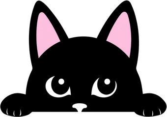

<!DOCTYPE html>
<html lang="en">
<head>
<meta charset="utf-8">
<meta name="viewport" content="width=device-width, initial-scale=1, viewport-fit=cover">
<title>Re:Lefela — Setswana, starting from zero</title>
<meta name="theme-color" content="#fdf7f9">
<meta name="color-scheme" content="light">
<link rel="manifest" href="manifest.webmanifest">
<link rel="icon" href="icons/icon-192.png">
<link rel="apple-touch-icon" href="icons/icon-192.png">
<style>
:root{
  /* Katse palette — black, white, soft pink (her ears) */
  --bg:#fdf7f9; --bg2:#f6e7ee; --card:#ffffff; --card2:#fdeff5;
  --ink:#1a161d; --ink-dim:#82717c; --line:#eed7e1;
  --pink:#f6a8c7; --pink-deep:#d76a9b; --coral:#e05d6f;
  --good:#3db878; --bad:#e05d6f; --radius:16px;
  --shadow:0 4px 14px rgba(215,106,155,.14);
}
*{box-sizing:border-box; -webkit-tap-highlight-color:transparent}
html,body{margin:0; padding:0; background:var(--bg); color:var(--ink);
  font-family:"Segoe UI",system-ui,-apple-system,sans-serif; min-height:100%}
body{display:flex; flex-direction:column; align-items:center}
#app{width:100%; max-width:560px; padding:16px 16px calc(24px + env(safe-area-inset-bottom)); min-height:100vh; position:relative}
h1,h2,h3{margin:.2em 0}
button{font:inherit; cursor:pointer; border:none; border-radius:var(--radius); color:var(--ink)}
.btn{display:block; width:100%; padding:14px 18px; background:#fff; font-size:1.05rem; font-weight:600;
  border:2px solid var(--ink); border-bottom-width:4px; transition:transform .06s}
.btn:active{transform:translateY(2px); border-bottom-width:2px}
.btn.primary{background:var(--pink); border-color:var(--ink); color:var(--ink)}
.btn.ghost{background:transparent; border:2px solid var(--line)}
.btn.small{display:inline-block; width:auto; padding:8px 16px; font-size:.85rem; border-bottom-width:3px}
.btn:disabled{opacity:.45; cursor:default}
.card{background:var(--card); border:2px solid var(--ink); border-radius:var(--radius); padding:18px; box-shadow:var(--shadow); margin:10px 0}
input{width:100%; padding:13px 14px; border-radius:12px; border:2px solid var(--line); background:#fff;
  color:var(--ink); font-size:1.05rem; margin:6px 0}
input:focus{outline:none; border-color:var(--pink)}
.muted{color:var(--ink-dim); font-size:.92rem}
.tiny{font-size:.8rem; color:var(--ink-dim)}
.row{display:flex; gap:10px; align-items:center}
.spread{justify-content:space-between}
.center{text-align:center}
.logo{font-weight:800; font-size:1.9rem; letter-spacing:.5px}
.logo .re{color:var(--ink)} .logo .zero{color:var(--pink-deep)}
.pill{display:inline-block; padding:3px 12px; border-radius:99px; background:var(--bg2); font-size:.85rem; color:var(--ink-dim)}
.xppill{background:var(--pink); color:var(--ink); font-weight:700}
.streakpill{background:var(--ink); color:#fff; font-weight:700}
/* home path */
.lesson-node{display:flex; gap:14px; align-items:center; width:100%; text-align:left;
  background:var(--card); padding:16px; border-radius:var(--radius); margin:10px 0;
  border:2px solid var(--line); border-bottom-width:4px}
.lesson-node.done{border-left:5px solid var(--good)}
.lesson-node.locked{opacity:.5}
.lesson-node.next{border-color:var(--ink)}
.lesson-node .idx{width:44px; height:44px; border-radius:50%; background:var(--bg2); display:flex;
  align-items:center; justify-content:center; font-weight:800; font-size:1.1rem; flex:none}
.lesson-node.done .idx{background:var(--good); color:#fff}
.lesson-node.next .idx{background:var(--pink); color:var(--ink)}
/* exercise area */
#exArea{min-height:340px; display:flex; flex-direction:column}
.prompt{font-size:1.35rem; font-weight:700; margin:14px 0}
.bigtsw{font-size:1.7rem; font-weight:800; color:var(--pink-deep)}
.tokens{display:flex; flex-wrap:wrap; gap:8px; margin:12px 0; min-height:52px;
  border-bottom:2px dashed var(--line); padding-bottom:10px}
.pool{display:flex; flex-wrap:wrap; gap:8px; margin:14px 0}
.tok{padding:10px 14px; background:#fff; border-radius:12px; font-size:1.05rem; font-weight:600;
  border:2px solid var(--line); border-bottom-width:3px; color:var(--ink)}
.tok.used{opacity:.25; pointer-events:none}
.choice{display:block; width:100%; text-align:left; padding:13px 16px; margin:7px 0; background:#fff;
  border-radius:12px; font-size:1.05rem; border:2px solid var(--line); border-bottom-width:3px}
.choice.sel{outline:3px solid var(--pink)}
.choice.good{background:#e0f5e9; border-color:var(--good)}
.choice.bad{background:#fce4e8; border-color:var(--bad)}
.matchgrid{display:grid; grid-template-columns:1fr 1fr; gap:8px; margin:12px 0}
.matchgrid .tok{text-align:center}
.tok.matched{opacity:.2; pointer-events:none}
.tok.selL,.tok.selR{outline:3px solid var(--pink-deep)}
.feedback{padding:14px; border-radius:var(--radius); margin-top:auto; font-weight:700; font-size:1.1rem}
.feedback.good{background:#e0f5e9; border:2px solid var(--good); color:#14532d}
.feedback.bad{background:#fce4e8; border:2px solid var(--bad); color:#7f1d2d}
.progressbar{height:12px; background:var(--bg2); border-radius:99px; overflow:hidden; flex:1}
.progressbar>div{height:100%; background:var(--pink); border-radius:99px; transition:width .3s}
.audio-btn{width:56px; height:56px; border-radius:50%; background:var(--pink); color:var(--ink);
  font-size:1.5rem; flex:none; border:2px solid var(--ink); border-bottom-width:4px}
/* 🐢 slow replay — secondary to 🔊, so it sits smaller and in the card colour */
.slow-btn{width:44px; height:44px; font-size:1.15rem; background:var(--card2)}
.rec-btn{background:var(--coral); color:#fff}
.notecard{background:var(--card2); border-left:4px solid var(--pink); padding:10px 14px; border-radius:8px;
  margin:10px 0; font-size:.95rem; color:#5f5560}
.rulecard{background:#fff; border:2px solid var(--ink);
  padding:18px; border-radius:var(--radius); font-size:1.05rem; line-height:1.55}
.topbar{display:flex; gap:10px; align-items:center; margin-bottom:10px}
.topbar .quit{background:none; font-size:1.4rem; color:var(--ink-dim); padding:4px 10px; width:auto}
.lb-row{display:flex; align-items:center; gap:12px; padding:12px 14px; background:#fff; border:2px solid var(--line); border-radius:12px; margin:8px 0}
.lb-row.me{border-color:var(--ink)}
.lb-row .name{font-weight:700; flex:1}
.crown{font-size:1.3rem}
.toast{position:fixed; bottom:18px; left:50%; transform:translateX(-50%); background:var(--ink); color:#fff;
  border:2px solid var(--pink); padding:12px 20px; border-radius:12px; font-weight:600; box-shadow:var(--shadow); z-index:99; max-width:90vw}
/* weekly champion popup — small one-time celebration, first open of a new XP week */
.champ-overlay{position:fixed; inset:0; background:rgba(26,22,29,.55); display:flex;
  align-items:center; justify-content:center; z-index:200; padding:20px}
.champ-card{background:#fff; border:2px solid var(--ink); border-radius:var(--radius);
  padding:28px 24px; text-align:center; max-width:320px; box-shadow:var(--shadow)}
/* "Ask your tutor" — Megan-only floating button, bottom-LEFT (Katse owns bottom-right).
   Lives outside #app (appended to document.body) so render()/renderFill() replacing
   #app's innerHTML on every screen switch never removes it — persists mid-lesson too,
   which is the whole point (that's when confusion strikes). z-index sits below the
   toast (99) and both overlays so it never fights them; the overlay itself sits ABOVE
   champ-overlay (200) so it's never trapped behind a celebration popup. */
.tutor-fab{position:fixed; left:12px; bottom:calc(12px + env(safe-area-inset-bottom));
  width:44px; height:44px; border-radius:50%; background:var(--ink); color:#fff;
  font-size:1.3rem; display:flex; align-items:center; justify-content:center;
  box-shadow:var(--shadow); border:2px solid var(--pink); z-index:90; padding:0}
.tutor-fab:active{transform:translateY(1px)}
.tutor-overlay{position:fixed; inset:0; background:rgba(26,22,29,.55); display:flex;
  align-items:center; justify-content:center; z-index:210; padding:20px}
.tutor-card{background:#fff; border:2px solid var(--ink); border-radius:var(--radius);
  padding:22px 20px; max-width:360px; width:100%; box-shadow:var(--shadow)}
.tutor-card textarea{width:100%; min-height:110px; padding:12px 14px; border-radius:12px;
  border:2px solid var(--line); background:#fff; color:var(--ink); font:inherit;
  font-size:1rem; margin:10px 0; resize:vertical}
.tutor-card textarea:focus{outline:none; border-color:var(--pink)}
/* 📖 Dictionary panel (SPEC-dictionary-panel.md) */
.dict-search{width:100%; padding:13px 15px; border-radius:12px; border:2px solid var(--line);
  background:#fff; color:var(--ink); font:inherit; font-size:1.05rem}
.dict-search:focus{outline:none; border-color:var(--pink)}
.dict-entry{background:var(--card); border:2px solid var(--line); border-radius:var(--radius);
  padding:13px 15px; margin:9px 0}
.dict-entry .head{display:flex; align-items:baseline; gap:8px; flex-wrap:wrap}
.dict-entry .word{font-size:1.25rem; font-weight:800; color:var(--pink-deep)}
.dict-entry .mean{margin:5px 0 0; font-size:1.02rem}
.dict-ex{background:var(--card2); border-left:4px solid var(--pink); padding:8px 12px;
  border-radius:8px; margin:8px 0 0}
.dict-ex .t{font-weight:600}
.dict-ex .e{color:var(--ink-dim); font-size:.92rem; margin-top:2px}
.dict-chip{display:inline-block; padding:2px 9px; border-radius:99px; background:var(--bg2);
  font-size:.72rem; color:var(--ink-dim); font-weight:600}
.dict-play{width:34px; height:34px; border-radius:50%; background:var(--pink); font-size:.95rem;
  display:inline-flex; align-items:center; justify-content:center; padding:0; flex:none}
/* "Bua le Katse" chat 💬 */
.chat-wrap{display:flex; flex-direction:column; flex:1; min-height:0}
.chat-log{flex:1; overflow-y:auto; padding:6px 2px 12px; min-height:0}
.crow{display:flex; margin:8px 0; align-items:flex-end; gap:8px}
.crow.me{justify-content:flex-end}
.cbub{max-width:78%; padding:10px 14px; border-radius:16px; font-size:1.05rem; line-height:1.35;
  border:2px solid var(--line); background:var(--card); box-shadow:var(--shadow)}
.crow.katse .cbub{border-bottom-left-radius:4px; background:var(--card2); border-color:var(--pink)}
.crow.me .cbub{border-bottom-right-radius:4px; background:var(--pink); border-color:var(--ink)}
.cbub .ceng{display:block; font-size:.78rem; color:var(--ink-dim); margin-top:3px}
.crow.me .cbub .ceng{color:var(--ink)}
.cbub .creplay{background:none; border:none; padding:0 0 0 6px; font-size:.95rem; width:auto; vertical-align:middle}
.chat-face{width:40px; height:40px; flex:none; border-radius:50%; border:2px solid var(--ink);
  background:var(--card2); object-fit:cover; object-position:top}
.ctyping .cbub{color:var(--ink-dim); letter-spacing:2px}
.ctyping .cbub span{display:inline-block; animation:cdot 1s infinite}
.ctyping .cbub span:nth-child(2){animation-delay:.15s} .ctyping .cbub span:nth-child(3){animation-delay:.3s}
@keyframes cdot{0%,60%,100%{transform:translateY(0)}30%{transform:translateY(-4px)}}
.stretch{border-bottom:2px dotted var(--pink-deep); cursor:pointer; font-weight:700}
.stretch.revealed{border-bottom-style:solid}
.chat-dock{flex:none; border-top:2px solid var(--line); padding:10px 0 4px 60px}  /* left 60px clears the tutor 💬 fab (12px + 44px + 4px) */
.chat-dock .pool{margin:8px 0}
.chat-dock .tokens{min-height:44px; margin:8px 0}
.chat-dock input{width:100%; padding:12px 14px; border-radius:12px; border:2px solid var(--line);
  background:#fff; color:var(--ink); font:inherit; font-size:1rem}
.chat-dock input:focus{outline:none; border-color:var(--pink)}
.cmode{background:none; border:none; width:auto; padding:4px 8px; font-size:1.1rem; opacity:.7}
.chat-hint{background:var(--card2); border-left:4px solid var(--pink); padding:8px 12px;
  border-radius:8px; font-size:.88rem; margin:6px 0}
.cask{display:block; width:100%; text-align:left; background:#fff; border:2px solid var(--line);
  border-bottom-width:3px; border-radius:12px; padding:10px 14px; margin:6px 0; font-size:1rem}
.hidden{display:none!important}
.pwrow{position:relative}
.pwrow input{padding-right:52px}
.eye{position:absolute; right:6px; top:50%; transform:translateY(-50%); background:none;
  font-size:1.2rem; padding:6px 10px; width:auto; opacity:.7}
.fade-in{animation:fadein .25s ease-out}
@keyframes fadein{from{opacity:0}to{opacity:1}}
.statgrid{display:grid; grid-template-columns:1fr 1fr; gap:10px; margin:12px 0}
.stat{background:#fff; border:2px solid var(--line); border-radius:var(--radius); padding:14px; text-align:center}
.stat b{display:block; font-size:1.5rem; color:var(--pink-deep)}
a{color:var(--pink-deep)}
/* Katse the mascot 🐈‍⬛ */
.katse-wrap{position:relative; display:inline-flex; flex-direction:column; align-items:center; flex:none;
  background:none; padding:0; border:none}
.katse-wrap.tappable{cursor:pointer}
.katse{width:120px; height:auto; display:block; transform-origin:50% 100%}
/* Each pose reserves its own box before the image decodes, so the layout never
   jumps. These MUST match the real pixel size of the file in KATSE_POSES —
   re-measure whenever a pose's artwork is replaced. */
.kv-home{aspect-ratio:331/340} .kv-awake{aspect-ratio:340/210} .kv-rest{aspect-ratio:340/217}
.kv-happy{aspect-ratio:340/176} .kv-curious{aspect-ratio:339/340}
.kv-oops{aspect-ratio:340/238} .kv-sleep{aspect-ratio:340/182}
.kv-talk{aspect-ratio:276/340} .kv-tilt{aspect-ratio:257/340} .kv-walk{aspect-ratio:340/250}
.kv-angry{aspect-ratio:340/289} .kv-stretch{aspect-ratio:322/340} .kv-slide{aspect-ratio:112/340}
/* persistent companion in the bottom-right corner of every lesson card */
.katse-corner{position:absolute; right:8px; bottom:calc(10px + env(safe-area-inset-bottom)); z-index:4; margin:0}
/* she sits hard against the right edge here, so grow the bubble leftward from
   that edge instead of centring it — centring would push a long bubble off-screen */
.katse-corner .kbubble{left:auto; right:0; transform:translateX(0) translateY(4px)}
.katse-corner .kbubble.show{transform:translateX(0) translateY(0)}
.katse-corner .katse{width:155px}
/* `slide` is a tall portrait pose (roughly 1:3) — everything else is squarer.
   `curious` used to need a cap too; since it became a full-body cat it is
   square like the rest and sizes normally. */
.katse-corner .katse.kv-slide{width:70px}
@media (max-height:640px){ .katse-corner .katse{width:115px} .katse-corner .katse.kv-slide{width:52px} }
/* big Katse on the home screen — her house, we just live here */
.katse-hero .katse{width:150px}
/* The walk-in is drawn on a wider, shorter canvas than the sitting pose. This
   width makes the SEATED CAT in its last frame exactly as tall as the sitting
   Katse it hands over to (measured: 147px on screen either way), so the swap
   at the end of the entrance is invisible. Re-measure if either file changes. */
.katse-hero .katse.kv-walk{width:214px}
.katse-hero .kbubble{left:8px; right:auto; transform:translateX(0) translateY(4px)}
.katse-hero .kbubble.show{transform:translateX(0) translateY(0)}
.katse-hero .kbubble::after{left:64px}
.katse.bounce{animation:katse-bounce .5s ease-out}
@keyframes katse-bounce{
  0%{transform:translateY(0) scale(1)}
  30%{transform:translateY(-7px) scale(1.05)}
  60%{transform:translateY(0) scale(.97)}
  100%{transform:translateY(0) scale(1)}
}
/* she's talking! gentle sway while a clip plays */
.katse.talking{animation:katse-talk .45s ease-in-out infinite; transform-origin:50% 90%}
@keyframes katse-talk{
  0%,100%{transform:rotate(0)}
  25%{transform:rotate(-2.5deg)}
  75%{transform:rotate(2.5deg)}
}
.katse.celebrate{animation:katse-pop .6s ease-out}
@keyframes katse-pop{
  0%{transform:scale(1)}
  40%{transform:scale(1.18) rotate(-4deg)}
  70%{transform:scale(.96) rotate(2deg)}
  100%{transform:scale(1)}
}
.katse.tilt{animation:katse-tilt .7s ease-in-out}
@keyframes katse-tilt{
  0%,100%{transform:rotate(0)}
  30%{transform:rotate(-6deg)}
  70%{transform:rotate(3deg)}
}
/* full-height layout for single-continue-button cards (teach / recap / Back's
   read-only recap view): content on top, Katse centred in the freed-up middle,
   Continue(+Skip recap) pinned to the true bottom of the screen instead of
   floating mid-page above a stretch of empty space with a tiny corner cat. */
.exwrap-fill{display:flex; flex-direction:column; min-height:calc(100vh - 40px - env(safe-area-inset-bottom))}
.exwrap-fill #exArea.exArea-solo{flex:1; display:flex; flex-direction:column; min-height:0}
.exa-mid{flex:1; min-height:0; display:flex; align-items:flex-end; justify-content:center; padding:4px 0; overflow:visible}
.katse-mid{margin:0 auto}
.katse-mid .katse{width:200px}
@media (max-height:720px){ .katse-mid .katse{width:170px} }
@media (max-height:640px){ .katse-mid .katse{width:145px} }
@media (max-height:600px){ .katse-mid .katse{width:120px} }
.exa-actions{padding-bottom:env(safe-area-inset-bottom)}
/* Clearance for the tutor fab (bottom-left, 44px + 12px margin = 56px footprint):
   teach/recap cards are the one layout that pins Continue/Skip-recap to the TRUE
   viewport bottom (exwrap-fill's whole point), so they're the only place the fab's
   corner can land ON a button's tap target instead of beside it. Scoped to Megan's
   session only via body.tutor-fab-on (set by mountTutorFab) — the second learner's layout is
   untouched. Verified at 375x812: without this, the fab overlapped Continue's
   bottom-left corner by ~32x40px; this padding clears it with room to spare. */
body.tutor-fab-on .exa-actions{padding-bottom:calc(64px + env(safe-area-inset-bottom))}
.exa-actions .btn+.btn{margin-top:8px}
/* part map — circles on a dotted path, Katse stands where you are */
.pmap{display:flex; align-items:center; justify-content:center; padding-top:52px}
.pslot{position:relative; display:flex; align-items:center}
.pslot:not(:last-child)::after{content:''; width:34px; border-top:3px dotted var(--line); margin:0 4px}
.pnode{width:36px; height:36px; border-radius:50%; border:2px solid var(--line); background:#fff;
  display:inline-flex; align-items:center; justify-content:center; font-weight:800; color:var(--ink-dim)}
.pnode.done{background:var(--pink); border-color:var(--ink); color:var(--ink)}
.pnode.cur{border-color:var(--ink); color:var(--ink)}
.pmap-kwrap{position:absolute; left:50%; bottom:calc(100% + 2px); margin-left:-24px;
  transition:transform .9s cubic-bezier(.5,0,.5,1)}
.pmap-katse{width:48px; height:auto; display:block}
.pmap-kwrap.hop .pmap-katse{animation:khop .9s ease-in-out}
@keyframes khop{
  0%,100%{transform:translateY(0)}
  30%{transform:translateY(-22px) rotate(-5deg)}
  60%{transform:translateY(-10px)}
  80%{transform:translateY(-16px)}
}
/* mini variant on the lesson path */
.pmap-mini{justify-content:flex-start; padding-top:6px; margin-top:2px}
.pmap-mini .pnode{width:20px; height:20px; font-size:.68rem; border-width:2px}
.pmap-mini .pslot:not(:last-child)::after{width:18px; margin:0 3px; border-top-width:2px}
/* current-position Katse sits beside/below her circle, never floating above the
   row — floating above is what overlapped the lesson description text. */
.pmap-mini .pmap-kwrap{left:auto; right:0; bottom:-6px; margin-left:0; transition:none}
.pmap-mini .pmap-katse{width:22px}
/* width:max-content is load-bearing: without an explicit width, an absolutely
   positioned box with left:50% shrink-to-fits into the space from that offset to
   the parent's right edge — i.e. HALF Katse's width (100px), so max-width:72vw
   never applied and long phrases wrapped to 5 clipped lines. */
.kbubble{position:absolute; bottom:calc(100% + 8px); left:50%; background:var(--ink); color:var(--bg);
  padding:6px 12px; border-radius:12px; font-weight:700; font-size:.95rem; width:max-content; max-width:72vw; text-align:center;
  opacity:0; transform:translateX(-50%) translateY(4px); transition:opacity .25s, transform .25s;
  pointer-events:none; z-index:5}
.kbubble.show{opacity:1; transform:translateX(-50%) translateY(0)}
.kbubble::after{content:''; position:absolute; top:100%; left:50%; transform:translateX(-50%);
  border:6px solid transparent; border-top-color:var(--ink)}
</style>
</head>
<body>
<div id="app"></div>
<script src="https://cdn.jsdelivr.net/npm/@supabase/supabase-js@2/dist/umd/supabase.min.js"></script>
<script src="content.js"></script>
<script src="dialogues.js"></script>
<script src="builder-bank.js"></script>
<script src="dict-bank.js"></script>
<script>
'use strict';
/* ===== Re:Lefela engine ===== */
const RL_CFG = {
  url: 'https://opacjlgljeippheotyhz.supabase.co',
  key: 'sb_publishable_Ga_kGVKb-ph90YxcAWissQ_wvaFklEv',
  emailDomain: 'relefela.app'
};
const LOCAL_MODE = new URLSearchParams(location.search).has('local');
const sb = LOCAL_MODE ? null : supabase.createClient(RL_CFG.url, RL_CFG.key);
const $app = document.getElementById('app');

/* ---------- local state + sync queue ---------- */
const store = {
  get(k, d){ try{ const v = localStorage.getItem('rl_'+k); return v===null ? d : JSON.parse(v); }catch(e){ return d; } },
  set(k, v){ localStorage.setItem('rl_'+k, JSON.stringify(v)); }
};
let state = {
  user: null,               // {id, username, display}
  srs: store.get('srs', {}),        // itemId -> {ease, interval, due, reps, lapses}
  progress: store.get('progress', {}), // unitId -> {lessonIdx, completed}
  xpTotal: store.get('xpTotal', 0),
  streak: store.get('streak', {current:0, best:0, last:null}),
  queue: store.get('queue', []),     // pending sync ops
  parked: store.get('parked', [])    // ops the server will never accept — kept, not deleted (see flushQueue)
};
function persist(){ store.set('srs', state.srs); store.set('progress', state.progress);
  store.set('xpTotal', state.xpTotal); store.set('streak', state.streak); store.set('queue', state.queue);
  store.set('parked', state.parked); }
// Learner-scoped keys — everything tied to WHO is signed in (state, progress, outbox,
// the device-local replay cursor). rl_lastUser (the identity marker) is handled on its
// own by the caller. There are no app-scoped rl_ keys. Used by logout + the account-
// switch guard in afterAuth so one learner's data can never bleed into another's.
function clearLearnerState(){
  ['rl_srs','rl_progress','rl_xpTotal','rl_streak','rl_queue','rl_parked','rl_replay','rl_rivalry','rl_champWeekSeen','rl_tutorq','rl_chat','rl_daily','rl_builder','rl_dictasked']
    .forEach(k=>localStorage.removeItem(k));
}

function enqueue(op){ state.queue.push(op); persist(); flushQueue(); }

/* "Move it aside" (Megan's ruling, 2026-07-28) — flushQueue used to keep a failed op at
   the HEAD of the outbox and retry it forever. That is right for a network blip and
   fatal for a row the server will never accept: one bad due_at stranded two days of
   the second learner's progress behind it, re-toasting every 30 s.
   The distinction that matters is WHY the save failed:
     - offline, a 5xx, or the project auto-paused (it does — there is a keep-alive pinger
       for exactly that reason) => transient. Keep the old behaviour and retry forever.
       Parking these would throw away real progress during a routine outage.
     - a Postgres data exception (22xxx) or integrity violation (23xxx) => this row is
       malformed and will be rejected every time, no matter how long we wait.
   Only the second kind is parked, and only after a few tries in case of a fluke. Parking
   is NOT deleting: the op moves to state.parked so nothing is silently lost, and the
   queue behind it drains. If err.code is absent we treat it as transient — the safe
   default is to keep retrying, never to discard a learner's work on a guess.
   Deliberately NOT parked: 42501 (insufficient_privilege). A missing column GRANT is a
   recurring hazard in these projects, and there the retry-forever-and-toast behaviour is
   exactly right — it stays loud and keeps the data until the grant is added. */
const PARK_AFTER_TRIES = 3;
const PARKED_MAX = 50;
function permanentSaveError(err){
  return /^2[23]\d{3}$/.test(String((err && err.code) || ''));
}

let flushing = false;
async function flushQueue(){
  if (LOCAL_MODE || flushing || !state.user || !navigator.onLine || state.queue.length===0) return;
  flushing = true;
  let parkedThisPass = 0;
  try{
    while(state.queue.length){
      const op = state.queue[0];
      let err = null;
      if (op.t==='xp') ({error:err} = await sb.from('xp_events').insert({user_id:state.user.id, amount:op.amount, kind:op.kind}));
      else if (op.t==='srs') ({error:err} = await sb.from('srs_items').upsert({user_id:state.user.id, item_id:op.item_id,
        ease:op.ease, interval_days:op.interval_days, due_at:op.due_at, reps:op.reps, lapses:op.lapses, updated_at:new Date().toISOString()}));
      else if (op.t==='streak') ({error:err} = await sb.from('streaks').upsert({user_id:state.user.id,
        current:op.current, best:op.best, last_active_date:op.last}));
      else if (op.t==='unit') ({error:err} = await sb.from('unit_progress').upsert({user_id:state.user.id,
        unit_id:op.unit_id, lesson_idx:op.lesson_idx, completed:op.completed, updated_at:new Date().toISOString()}));
      if (err){
        op.fails = (op.fails||0) + 1;
        if (permanentSaveError(err) && op.fails >= PARK_AFTER_TRIES){
          state.parked.push({op, code:err.code||null, message:err.message||null, at:new Date().toISOString()});
          while (state.parked.length > PARKED_MAX) state.parked.shift();
          state.queue.shift(); persist();
          console.warn('[re-lefela] parked a save the server will never accept:', err.code, err.message, op);
          parkedThisPass++;
          continue;                 // the rest of the outbox is not this op's hostage
        }
        persist();                  // remember the attempt count across reloads
        toast('Save failed — will retry. ('+ (err.message||err.code||'network') +')');
        break;
      }
      state.queue.shift(); persist();
    }
  } finally {
    flushing = false;
    if (parkedThisPass) toast(parkedThisPass===1
      ? 'One save could not go through — everything else is saved.'
      : parkedThisPass+' saves could not go through — everything else is saved.');
  }
}
window.addEventListener('online', flushQueue);
setInterval(flushQueue, 30000);

function toast(msg){
  const t = document.createElement('div'); t.className='toast'; t.textContent = msg;
  document.body.appendChild(t); setTimeout(()=>t.remove(), 4200);
}

/* ---------- XP / streak / SRS ---------- */
function todayStr(){ const d = new Date(); return d.getFullYear()+'-'+String(d.getMonth()+1).padStart(2,'0')+'-'+String(d.getDate()).padStart(2,'0'); }
function addXP(amount, kind){
  state.xpTotal += amount; persist();
  enqueue({t:'xp', amount, kind});
  touchStreak();
}
function touchStreak(){
  const today = todayStr();
  const s = state.streak;
  if (s.last === today) return;
  const yest = new Date(Date.now()-86400000);
  const yestStr = yest.getFullYear()+'-'+String(yest.getMonth()+1).padStart(2,'0')+'-'+String(yest.getDate()).padStart(2,'0');
  s.current = (s.last === yestStr) ? s.current+1 : 1;
  s.best = Math.max(s.best, s.current);
  s.last = today; persist();
  enqueue({t:'streak', current:s.current, best:s.best, last:today});
}
/* ---------- Interval ceiling + repair (2026-07-28) ----------
   srsGrade multiplied `interval` by `ease` (up to 3.0) with NO upper bound, so a
   heavily-drilled card compounds without limit: the second learner reached 2 549 900 days on
   u1l1-04 (due year 9008), and one more correct answer crossed ~8 000 years — the
   point where toISOString() switches to the ISO expanded-year form
   ("+022970-09-07T12:01:47.431Z"). Postgres reads that leading "+022970" as a time-
   zone offset and rejects the row ("time zone displacement out of range"). Because
   flushQueue leaves a failed op at the HEAD of the outbox to retry (right for a
   network blip, fatal for a permanent error), that single row wedged her entire sync
   for two days and re-toasted every 30 s.
   Two guards, because the cap alone cannot heal state already written to disk:
     1. MAX_INTERVAL_DAYS caps every new interval at grade time.
     2. repairIntervals() clamps oversized values already in state.srs, in the pending
        outbox, and anything pullRemote() merges back in from the server.
   NB a further ×3 would have passed 8.64e15 ms, where `new Date(ms).toISOString()`
   throws RangeError — that would have broken grading outright, not just syncing.

   Why 30 and not a textbook SRS ceiling (Megan's ruling, 2026-07-28): a year was still
   too long for how this app is actually used. These are beginners a few months into a
   single semester, not people maintaining a mature deck for years — "we get a word right
   today and next week we've completely forgotten it," her words. 30 days means every
   learned word is asked again within a month at worst. The ladder stays a real spacing
   curve — 1 → 3 → 7.8 → 20.7 → 30, i.e. five correct answers to reach the ceiling
   (ease climbs 2.5 → 2.7 over those steps, it is not a flat ×3) — and the Daily Quest's
   weakest-first top-up surfaces
   known words sooner than their due date anyway, so the ceiling is a floor on exposure,
   not a schedule. One number to change if she wants it tighter. */
const MAX_INTERVAL_DAYS = 30;
const MAX_INTERVAL_MS = MAX_INTERVAL_DAYS * 86400000;

/* Clamps state.srs + queued 'srs' ops. Anything clamped is re-stamped `touched` and
   re-enqueued so the SERVER converges too — otherwise pullRemote() (remote wins when
   its updated_at is newer than local `touched`) would keep pulling the bad value back
   every session and the repair would never stick. Safe to run repeatedly: it only acts
   on out-of-range values, and 'srs' ops are upserts keyed on (user_id, item_id), so a
   corrective op simply supersedes an older queued one. */
function repairIntervals(){
  const now = Date.now();
  let fixed = 0;
  for (const id of Object.keys(state.srs)){
    const it = state.srs[id];
    if (!it || typeof it !== 'object') continue;
    const badInterval = !(typeof it.interval === 'number' && isFinite(it.interval) && it.interval <= MAX_INTERVAL_DAYS);
    const badDue = !(typeof it.due === 'number' && isFinite(it.due) && it.due <= now + MAX_INTERVAL_MS);
    if (!badInterval && !badDue) continue;
    if (badInterval) it.interval = MAX_INTERVAL_DAYS;
    // Keep an already-sane earlier due date; only pull an out-of-range one back in.
    it.due = Math.min(isFinite(it.due) ? it.due : Infinity, now + it.interval*86400000);
    it.touched = now;
    fixed++;
    enqueue({t:'srs', item_id:id, ease:it.ease, interval_days:it.interval,
      due_at:new Date(it.due).toISOString(), reps:it.reps, lapses:it.lapses});
  }
  // Ops queued BEFORE this fix shipped still carry the unsendable values; clamp in
  // place so the head of the outbox can finally flush instead of erroring forever.
  let opsFixed = 0;
  for (const op of state.queue){
    if (op.t !== 'srs') continue;
    const t = Date.parse(op.due_at);
    const badInterval = !(typeof op.interval_days === 'number' && isFinite(op.interval_days) && op.interval_days <= MAX_INTERVAL_DAYS);
    const badDue = !(isFinite(t) && t <= now + MAX_INTERVAL_MS);
    if (!badInterval && !badDue) continue;
    if (badInterval) op.interval_days = MAX_INTERVAL_DAYS;
    op.due_at = new Date(Math.min(isFinite(t) ? t : Infinity, now + op.interval_days*86400000)).toISOString();
    opsFixed++;
  }
  if (fixed || opsFixed) persist();
  return {fixed, opsFixed};
}

function srsGrade(itemId, ok){
  const now = Date.now();
  const it = state.srs[itemId] || {ease:2.5, interval:0, due:now, reps:0, lapses:0};
  if (ok){
    it.reps++;
    it.interval = Math.min(MAX_INTERVAL_DAYS,
      it.reps===1 ? 1 : it.reps===2 ? 3 : Math.round(it.interval * it.ease * 10)/10);
    it.ease = Math.min(3.0, it.ease + 0.05);
  } else {
    it.lapses++; it.reps = 0; it.interval = 0;
    it.ease = Math.max(1.3, it.ease - 0.25);
  }
  it.due = now + it.interval*86400000;
  it.touched = now;                     // last local write, ms epoch — pullRemote compares against remote updated_at so local edits aren't clobbered
  state.srs[itemId] = it; persist();
  enqueue({t:'srs', item_id:itemId, ease:it.ease, interval_days:it.interval, due_at:new Date(it.due).toISOString(), reps:it.reps, lapses:it.lapses});
}
function dueItems(){
  const now = Date.now(); const all = [];
  for (const u of RL_CONTENT.units) for (const l of u.lessons) for (const it of l.items){
    if (it.kind==='rule') continue;
    const s = state.srs[it.id];
    if (s && s.due <= now) all.push(it);
  }
  return all;
}

/* ---------- text helpers ---------- */
/* Separators become SPACES, not nothing. "she/he" used to normalise to "shehe" —
   one nonsense word that could never match "he she", so every one of the 46 cards
   whose English lists alternatives ("he / she", "arm / hand") rejected a correct
   answer typed the other way round. Apostrophes still vanish, so "what's" and
   "whats" stay the same word. No tsw string contains / or -, so Setswana grading
   is unaffected (checked: 0 of 307). */
function norm(s){ return s.toLowerCase().normalize('NFD').replace(/[̀-ͯ]/g,'')
  .replace(/[\/\-–—]/g,' ').replace(/[^a-z0-9\s]/g,'').replace(/\s+/g,' ').trim(); }
function lev(a, b){
  const m = a.length, n = b.length;
  if (Math.abs(m-n) > 3) return 99;
  const dp = Array.from({length:m+1}, (_,i)=>[i, ...Array(n).fill(0)]);
  for (let j=1;j<=n;j++) dp[0][j]=j;
  for (let i=1;i<=m;i++) for (let j=1;j<=n;j++)
    dp[i][j] = Math.min(dp[i-1][j]+1, dp[i][j-1]+1, dp[i-1][j-1] + (a[i-1]===b[j-1]?0:1));
  return dp[m][n];
}
/* Every ordering of every non-empty subset of the alternatives, e.g.
   ['big','great','elder'] -> 'big', 'great', …, 'big great', 'great big', …
   15 strings for 3 alternatives, 64 for 4 — cheap, and generosity is right here:
   the card is testing whether she knows what the word MEANS, not whether she
   reproduced the gloss list in the author's order. */
function altOrderings(alts){
  const out = [];
  const walk = (chosen, rest)=>{
    if (chosen.length) out.push(chosen.join(' '));
    for (let i=0;i<rest.length;i++) walk(chosen.concat(rest[i]), rest.slice(0,i).concat(rest.slice(i+1)));
  };
  walk([], alts);
  return out;
}
function answerMatches(given, expected){
  const g = norm(given), e = norm(expected);
  if (g === e) return 'exact';
  const tol = e.length > 12 ? 2 : 1;
  if (lev(g, e) <= tol) return 'close';
  /* Alternative glosses: a card's English often lists synonyms with a slash
     ("he / she", "arm / hand"). Any ONE of them, or any combination in any
     order, is a right answer. Split the RAW string — norm() has by now turned
     the slashes into spaces, so the alternatives are no longer separable. */
  if (expected.indexOf('/') >= 0){
    const alts = expected.split('/').map(a=>norm(a)).filter(Boolean);
    if (alts.length > 1 && alts.length <= 4){
      let close = false;
      for (const cand of altOrderings(alts)){
        if (g === cand) return 'exact';
        if (lev(g, cand) <= (cand.length > 12 ? 2 : 1)) close = true;
      }
      if (close) return 'close';
    }
  }
  return null;
}
function shuffle(arr){ const a = arr.slice(); for (let i=a.length-1;i>0;i--){ const j = Math.floor(Math.random()*(i+1)); [a[i],a[j]]=[a[j],a[i]]; } return a; }
function pick(arr){ return arr[Math.floor(Math.random()*arr.length)]; }
function esc(s){ return s.replace(/[&<>"]/g, c=>({'&':'&amp;','<':'&lt;','>':'&gt;','"':'&quot;'}[c])); }

/* word pool for tap-exercise distractors */
function unitWordPool(unit){
  const words = new Set();
  for (const l of unit.lessons) for (const it of l.items)
    if (it.tsw) it.tsw.split(/\s+/).forEach(w=>words.add(w));
  return [...words];
}

/* ---------- audio ---------- */
/* Slow playback (the second learner's ask, 2026-07-17) is playbackRate only — there is NO second
   set of files. Every clip gets a 🐢 for free, and adding it can never require an
   AUDIO_CACHE bump, because no byte of audio/ changes. preservesPitch keeps the
   voice human instead of a chipmunk; Safari still wants the webkit- spelling.
   0.65 is the floor worth using — below ~0.5 browsers start mangling or muting. */
const SLOW_RATE = 0.65;
let currentAudio = null;
function playAudio(file, rate){
  if (!file) return null;
  if (currentAudio){ currentAudio.pause(); }
  currentAudio = new Audio('audio/'+file);
  if (rate && rate !== 1){
    currentAudio.preservesPitch = true;
    currentAudio.webkitPreservesPitch = true;   // Safari < 17
    currentAudio.playbackRate = rate;
  }
  currentAudio.play().catch(()=>{});
  // whatever plays, Katse is the one saying it — sway while the clip runs
  const wrapEl = katseWrapEl();
  const img = wrapEl && wrapEl.querySelector('.katse');
  if (img){
    img.classList.add('talking');
    const stop = ()=>img.classList.remove('talking');
    currentAudio.addEventListener('ended', stop);
    currentAudio.addEventListener('pause', stop);
    setTimeout(stop, 8000); // safety net if neither event fires
  }
  return currentAudio;
}

/* ---------- Katse the mascot 🐈‍⬛ ---------- */
/* Animated WebP, one file per pose — the  plays them on its own, so there
   is no timer here and nothing to start or stop. Frame timing is baked into
   each file (built from the sprite sheets in Katse/, see Katse/preview.html).
   `oops` is still a PNG: no animation was drawn for it. */
const KATSE_POSES = {
  home:'img/katse-home.webp',       // sitting, tail swishing — her home screen
  awake:'img/katse-awake.webp',     // peeking over the wall — card has audio
  rest:'img/katse-rest.webp',       // draped, tail swinging — no audio here
  happy:'img/katse-happy.webp',     // belly-up, paws waving — celebration
  curious:'img/katse-curious.webp', // full body, chattering — new word!
  oops:'img/katse-oops.png',        // big peek with paws — sympathetic miss
  sleep:'img/katse-sleep.webp',     // curled up — today's streak is safe
  talk:'img/katse-talk.webp',       // sitting, mouth moving — she's saying something
  tilt:'img/katse-tilt.webp',       // sitting, head tilting — a quieter idle
  walk:'img/katse-walk.webp',       // walks in and sits — plays ONCE, then hand to `home`
  angry:'img/katse-angry.webp',     // cross — drawn, not yet placed
  stretch:'img/katse-stretch.webp', // a stretch — drawn, not yet placed
  slide:'img/katse-slide.webp'      // sliding down the glass — drawn, not yet placed
};
/* katse-walk.webp is authored with a loop count of 1, so the browser stops on
   the seated frame. This is how long it runs — keep the two in step. */
const KATSE_WALK_MS = 8 * 350;
function katseImg(variant){
  return ``;
}
function katseHTML(id, awake, extraClass, pose){
  const isHome = (extraClass||'').indexOf('katse-h') !== -1; // katse-home or katse-hero
  const variant = pose || (isHome ? 'home' : (awake ? 'awake' : 'rest'));
  return `<button class="katse-wrap ${awake?'tappable':''} ${extraClass||''}" id="${id}" aria-label="${awake?'Tap Katse to hear it':'Katse is resting'}">
    <div class="kbubble"></div>${katseImg(variant)}</button>`;
}
/* the on-screen Katse right now (corner during drill cards, mid on teach/recap cards,
   hero on home) — the single lookup every shared helper routes through so nobody
   accidentally grabs the wrong mascot when more than one id could match. */
function katseWrapEl(){ return document.getElementById('katse-corner') || document.getElementById('katse-mid') || document.getElementById('katse-home'); }
function katseBubble(text, ms){
  const el = katseWrapEl(); if (!el) return;
  const bub = el.querySelector('.kbubble'); if (!bub) return;
  bub.textContent = text; bub.classList.add('show');
  clearTimeout(bub._t); bub._t = setTimeout(()=>bub.classList.remove('show'), ms||2600);
}
function katseSay(text, audioFile){ if (text) katseBubble(text); if (audioFile) playAudio(audioFile); }
/* The 🔊 + 🐢 pair. One helper so the eight card layouts can't drift apart.
   `big` = the centred listen-card treatment; the turtle stays the normal 56px
   there so it reads as secondary to the main play button. */
function playBtnsHTML(big){
  const bigStyle = big ? ' style="width:80px;height:80px;font-size:2rem"' : '';
  return `<button class="audio-btn" id="b-play"${bigStyle} aria-label="Play">🔊</button>`
       + `<button class="audio-btn slow-btn" id="b-slow" aria-label="Play slowly" title="Slowly">🐢</button>`;
}
function katseSetPose(pose){
  const el = katseWrapEl(); const img = el && el.querySelector('.katse');
  if (!img) return;
  img.src = KATSE_POSES[pose]; img.className = 'katse kv-'+pose;
}
/* Katse walks in once per app load and settles into the sitting idle.
   katse-walk.webp stops itself on the seated frame (loop count 1); this only
   hands the pose over afterwards. Skipped when she's already curled up asleep,
   and it re-checks the element first in case you navigated away mid-walk. */
let katseHasWalkedIn = false;
function katseEntrance(){
  if (katseHasWalkedIn) return;
  katseHasWalkedIn = true;
  const img = document.querySelector('#katse-home .katse');
  if (!img || !img.classList.contains('kv-home')) return;  // asleep, or not home
  img.src = KATSE_POSES.walk; img.className = 'katse kv-walk';
  setTimeout(()=>{
    const later = document.querySelector('#katse-home .katse');
    if (later && later.classList.contains('kv-walk')){
      later.src = KATSE_POSES.home; later.className = 'katse kv-home';
    }
  }, KATSE_WALK_MS);
}
function katseAnim(cls){
  const el = katseWrapEl(); const img = el && el.querySelector('.katse');
  if (!img) return;
  img.classList.remove('bounce','celebrate','tilt'); void img.offsetWidth; img.classList.add(cls);
}
function hookKatse(id, getItem){
  const el = document.getElementById(id);
  if (!el) return;
  el.onclick = ()=>{
    const it = typeof getItem === 'function' ? getItem() : getItem;
    if (!it || !it.audio) return;
    katseAnim('bounce');
    katseSay(it.tsw, it.audio);
  };
}
function voicedItems(){
  const out = [];
  for (const u of RL_CONTENT.units) for (const l of u.lessons) for (const it of l.items) if (it.audio) out.push(it);
  return out;
}
/* Persistent corner mascot — kept on EVERY lesson/recap card so Katse never vanishes.
   Awake & tappable (plays the clip) when the card has audio; resting otherwise. */
/* part map — the little circle path with Katse standing on the current part.
   cur === total renders an all-done row with no cat. */
function partMapHTML(total, cur, mini){
  // mini (home lesson node) uses the flatter "awake" peek pose — she sits low
  // and wide beside the circle so she never pokes up into the description text
  // above; the big checkpoint map keeps her sitting pose + hop animation as-is.
  const pose = mini ? KATSE_POSES.awake : KATSE_POSES.home;
  let slots = '';
  for (let i=0; i<total; i++){
    const st = i < cur ? 'done' : (i === cur ? 'cur' : '');
    const kat = i === cur ? `<span class="pmap-kwrap"></span>` : '';
    slots += `<span class="pslot">${kat}<span class="pnode ${st}">${i < cur ? '✓' : i+1}</span></span>`;
  }
  return `<div class="pmap ${mini?'pmap-mini':''}">${slots}</div>`;
}
function mountKatseCorner(it, pose){
  if (session && session.gym) return;
  const app = document.getElementById('app');
  if (!app) return;
  const old = document.getElementById('katse-corner'); if (old) old.remove();
  const audio = !!(it && it.audio);
  app.insertAdjacentHTML('beforeend', katseHTML('katse-corner', audio, 'katse-corner', pose));
  if (audio) hookKatse('katse-corner', it);
}
/* Own id (katse-mid) so this never collides with the corner mascot's #katse-corner —
   playAudio's .talking sway, katseBubble, katseSetPose etc. all go through katseWrapEl(),
   which checks katse-corner/katse-mid/katse-home in turn, so the contract still holds.
   Mounted bigger + centred into the flexible middle slot of a "solo continue button"
   card instead of the bottom corner. */
function mountKatseMid(it, pose){
  if (session && session.gym) return;
  const slot = document.getElementById('katse-mid-slot');
  if (!slot) return;
  const audio = !!(it && it.audio);
  slot.innerHTML = katseHTML('katse-mid', audio, 'katse-mid', pose);
  if (audio) hookKatse('katse-mid', it);
}

/* ---------- screens ---------- */
function render(html){ $app.innerHTML = '<div class="fade-in">'+html+'</div>'; }
/* same as render(), but the wrapper is a full-height flex column so an #exArea.exArea-solo
   child can pin its buttons to the true bottom (see .exwrap-fill in <style>). */
function renderFill(html){ $app.innerHTML = '<div class="fade-in exwrap-fill">'+html+'</div>'; }

function screenAuth(msg){
  render(`
    <div class="center" style="margin-top:5vh">
      <div style="display:flex; justify-content:center">
        
      </div>
      <div class="logo"><span class="re">Re:</span><span class="zero">Lefela</span></div>
      <p class="muted">Setswana, starting from zero. Together.</p>
    </div>
    <div class="card">
      ${msg?`<p style="color:var(--coral)">${esc(msg)}</p>`:''}
      <input id="f-user" placeholder="Username" autocomplete="username" autocapitalize="off" autocorrect="off">
      <div class="pwrow">
        <input id="f-pass" placeholder="Password" type="password" autocomplete="current-password">
        <button class="eye" type="button" data-eye="f-pass">👁</button>
      </div>
      <div id="signup-extra" class="hidden">
        <input id="f-display" placeholder="Display name (e.g. Megan)">
        <input id="f-code" placeholder="Join code">
      </div>
      <button class="btn primary" id="b-login" style="margin-top:8px">Log in</button>
      <button class="btn ghost" id="b-signup" style="margin-top:8px">Sign up</button>
      <p class="tiny center" style="margin-top:10px">Two learners. One language. Lefela → legendary.</p>
    </div>`);
  hookEyes();
  let signupMode = false;
  const extra = document.getElementById('signup-extra');
  document.getElementById('b-signup').onclick = async ()=>{
    if (!signupMode){ signupMode = true; extra.classList.remove('hidden');
      document.getElementById('b-signup').textContent = 'Create account'; return; }
    await doSignup();
  };
  document.getElementById('b-login').onclick = doLogin;
  async function doLogin(){
    const u = document.getElementById('f-user').value.trim().toLowerCase();
    const p = document.getElementById('f-pass').value;
    if (!u || !p) return toast('Username and password, tsweetswee.');
    const {data, error} = await sb.auth.signInWithPassword({email:`${u}@${RL_CFG.emailDomain}`, password:p});
    if (error) return screenAuth('Login failed: '+error.message);
    await afterAuth(data.user);
  }
  async function doSignup(){
    const u = document.getElementById('f-user').value.trim().toLowerCase();
    const p = document.getElementById('f-pass').value;
    const d = document.getElementById('f-display').value.trim() || u;
    const c = document.getElementById('f-code').value.trim();
    if (!u || !p || !c) return toast('Username, password and join code, tsweetswee.');
    if (!/^[a-z0-9_]{3,20}$/.test(u)) return toast('Username: 3-20 letters/numbers/underscores.');
    const {data, error} = await sb.auth.signUp({email:`${u}@${RL_CFG.emailDomain}`, password:p});
    if (error) return screenAuth('Signup failed: '+error.message);
    if (!data.session) return screenAuth('Account created but e-mail confirmation is still ON in Supabase — Megan needs to switch it off, then just log in.');
    const {error: e2} = await sb.rpc('join_relefela', {join_code:c, uname:u, display:d});
    if (e2) return screenAuth('Join failed: '+e2.message);
    await afterAuth(data.user);
  }
}

async function afterAuth(user){
  const {data: prof} = await sb.from('profiles').select('*').eq('id', user.id).single();
  if (!prof) return screenAuth('No profile found — sign up with the join code first.');
  // Account-switch safety net: if the last learner on this device was someone else,
  // wipe their state BEFORE flushQueue/pullRemote run — otherwise a pending queued op
  // (stamped with user_id only at FLUSH time) would be pushed under THIS user's id.
  // Clear both disk AND the in-memory state loaded at boot (no reload happens here).
  // LOCAL_MODE never reaches afterAuth (boot() returns early), so local state is safe.
  const lastUser = store.get('lastUser', null);
  if (lastUser && lastUser.id && lastUser.id !== user.id){
    clearLearnerState();
    state.srs = {}; state.progress = {}; state.xpTotal = 0;
    state.streak = {current:0, best:0, last:null}; state.queue = []; state.parked = [];
  }
  state.user = {id:user.id, username:prof.username, display:prof.display_name};
  store.set('lastUser', state.user);
  await pullRemote();
  // AFTER the merge, BEFORE the flush: pullRemote copies interval_days/due_at straight
  // from the server, so a row still carrying a pre-fix value would come back in here.
  repairIntervals();
  flushQueue();
  screenHome();
  maybeShowWeeklyChampion(); // fire-and-forget — never blocks/delays home render
  mountTutorFab();
  flushTutorQuestions(); // fire-and-forget — flushes anything queued while offline
}

async function pullRemote(){
  // merge remote SRS/progress into local (remote wins when newer)
  try{
    const {data: rows} = await sb.from('srs_items').select('*').eq('user_id', state.user.id);
    (rows||[]).forEach(r=>{
      const localItem = state.srs[r.item_id];
      const remoteDue = new Date(r.due_at).getTime();
      if (!localItem || new Date(r.updated_at).getTime() > (localItem.touched||0))
        state.srs[r.item_id] = {ease:r.ease, interval:r.interval_days, due:remoteDue, reps:r.reps, lapses:r.lapses,
          touched:new Date(r.updated_at).getTime()};   // carry the remote timestamp so the NEXT pull compares sanely
    });
    const {data: up} = await sb.from('unit_progress').select('*').eq('user_id', state.user.id);
    (up||[]).forEach(r=>{
      const loc = state.progress[r.unit_id] || {lessonIdx:0, completed:false};
      if (r.lesson_idx > loc.lessonIdx) loc.lessonIdx = r.lesson_idx;
      loc.completed = loc.completed || r.completed;
      state.progress[r.unit_id] = loc;
    });
    const {data: st} = await sb.from('streaks').select('*').eq('user_id', state.user.id).single();
    if (st && st.current > state.streak.current){ state.streak = {current:st.current, best:st.best, last:st.last_active_date}; }
    const {data: xp} = await sb.from('leaderboard_week').select('*').eq('username', state.user.username).single();
    if (xp && xp.total_xp > state.xpTotal) state.xpTotal = xp.total_xp;
    persist();
  }catch(e){ /* offline is fine */ }
}

/* ---------- Reset Lesson 1 (session 12) ----------
   Megan wants to relearn Lesson 1 from scratch on demand. Reset = clear ONLY the
   u1l1-* SRS rows so teach cards come back; XP/streak are untouched by design
   (2026-07-16 decision).
   Must be a real DELETE, not a zeroed-out upsert: buildExercises() decides "already
   know this word" (recap, no teach card) purely from `state.srs[it.id]` being PRESENT
   — a reset-to-zero row would still be present and would still be treated as known,
   so the teach cards would never come back. RLS on srs_items is `for all ... using
   (user_id = auth.uid())`, so the signed-in user can delete her own rows.
   lessonIdx is deliberately left untouched: unlock progression (prog.lessonIdx, drives
   locked/done/next on the home path) and "known" state (state.srs presence) are
   already independent in this app — startLesson()'s `known`/`allMet`/`firstOpenPart`
   all read live SRS rows, so clearing them alone makes Lesson 1 open fresh (part 1,
   real teach+grade, not replay mode) without relocking any later lesson.
   Both sides of the sync must agree or the gotcha in PROJECT-STATUS.md bites: delete
   the server rows FIRST (await it), and only clear local rl_srs / strip the outbox
   once that succeeds — otherwise pullRemote() would merge the still-there server rows
   straight back in, or a lingering queued 'srs' upsert would re-push them. */
async function resetLesson1(){
  if (!confirm('Reset Lesson 1? Your XP and streak stay.')) return;
  const btn = document.getElementById('b-reset-l1');
  if (btn) btn.disabled = true;
  const clearLocal = ()=>{
    state.queue = state.queue.filter(op => !(op.t==='srs' && typeof op.item_id==='string' && op.item_id.indexOf('u1l1-')===0));
    Object.keys(state.srs).forEach(id=>{ if (id.indexOf('u1l1-')===0) delete state.srs[id]; });
    const rm = store.get('replay', {}); delete rm[replayKey('u1', 0)]; store.set('replay', rm);
    persist();
  };
  if (LOCAL_MODE){
    clearLocal();
    toast('Lesson 1 reset. Go siame!');
    return screenStats();
  }
  if (!state.user){ if (btn) btn.disabled = false; return; }
  if (!navigator.onLine){ if (btn) btn.disabled = false; return toast('You are offline — connect and try again.'); }
  const {error} = await sb.from('srs_items').delete().eq('user_id', state.user.id).like('item_id', 'u1l1-%');
  if (error){ if (btn) btn.disabled = false; return toast('Reset failed: ' + (error.message||error.code||'network')); }
  clearLocal();
  toast('Lesson 1 reset. Go siame!');
  screenStats();
}

function screenHome(){
  currentScreen = 'Home';
  const due = dueItems().length;
  const doneToday = state.streak.last === todayStr();
  const unitsHtml = RL_CONTENT.units.map(unit=>{
    const prog = state.progress[unit.id] || {lessonIdx:0, completed:false};
    const nodes = unit.lessons.map((l, i)=>{
      const cls = i < prog.lessonIdx ? 'done' : i === prog.lessonIdx ? 'next' : 'locked';
      const icon = i < prog.lessonIdx ? '✓' : (i+1);
      let partMap = '';
      if (cls !== 'locked' && lessonParts(l) > 1){
        const total = lessonParts(l), k = firstOpenPart(l);
        if (k >= 0){ if (cls === 'next') partMap = partMapHTML(total, k, true); }
        // fully learned → show where the next replay sitting starts (local cursor)
        else partMap = partMapHTML(total, cls === 'done' ? replayCursor(unit.id, i, total) : total-1, true);
      }
      return `<button class="lesson-node ${cls}" data-u="${unit.id}" data-i="${i}" ${cls==='locked'?'disabled':''}>
        <div class="idx">${icon}</div>
        <div><b>${esc(l.title)}</b><br><span class="muted">${esc(l.blurb)}</span>${partMap}</div>
      </button>`;
    }).join('');
    return `<h3 style="margin-top:20px">${esc(unit.title)} <span class="muted" style="font-weight:400;font-size:.85rem">— ${esc(unit.subtitle)}</span></h3>${nodes}`;
  }).join('');
  // Daily Quest — always there once she has met a few words, whether or not
  // anything is due; the due count rides along as a sub-label so the review
  // she used to get its own button for is visibly still happening.
  const learnedN = learnedItems().length;
  const qDone = dailyDoneToday();
  const dailyBtn = learnedN >= 4
    ? `<button class="btn ${qDone?'ghost':'primary'}" id="b-daily" style="margin:10px 0">🔁 ${esc(RL_CONTENT.flavour.review)} — Daily Quest${qDone?' ✓':''}<br>
        <span class="tiny">${Math.min(DAILY_ROUNDS, learnedN)} rounds${due>0?` · ${due} due for review`:''} · ${esc(RL_CONTENT.flavour.streak)}</span></button>` : '';
  const gym = (RL_CONTENT.nchlt && RL_CONTENT.nchlt.length >= 4)
    ? `<button class="btn ghost" id="b-gym" style="margin:10px 0">👂 Listening gym — real native voices</button>` : '';
  // visible once ANY scenario is unlocked; locked ones then show in the picker with their
  // unlock hint (revised from spec §4's fully-hidden rule — she couldn't find the feature)
  const chatSc = chatOpenScenario();
  const chatAllDone = chatSc && RL_DIALOGUES.filter(sc=>sc.requires.every(chatLearned)).every(sc=>chatStoreGet().done[sc.id]);
  const chatBtn = chatSc
    ? `<button class="btn ghost" id="b-chat" style="margin:10px 0">💬 Bua le Katse — chat with her in Setswana${chatAllDone ? ' ✓' : ''}</button>` : '';
  // Sentence Builder — visible once ANY bank prompt is unlocked (same gate shape as chat)
  const bldEntries = builderEntries();
  const bldSt = builderStoreGet();
  const bldAllDone = bldEntries.length > 0 && bldEntries.every(e=>bldSt.done[e.id]);
  const builderBtn = bldEntries.length
    ? `<button class="btn ghost" id="b-builder" style="margin:10px 0">🧩 Sentence Builder — type it yourself${bldAllDone ? ' ✓' : ''}<br>
        <span class="tiny">${bldEntries.length} sentence${bldEntries.length===1?'':'s'} unlocked · English in, your Setswana out</span></button>` : '';
  // Dictionary — deliberately ungated (a reference she cannot open is no use), and
  // shown even if dict-bank.js somehow failed to load, in which case DICT is empty
  // and the button stays hidden rather than opening an empty screen.
  const dictBtn = DICT.length
    ? `<button class="btn ghost" id="b-dict" style="margin:10px 0">📖 Dictionary — look a word up<br>
        <span class="tiny">${DICT.length} words · Setswana ↔ English, with examples</span></button>` : '';
  render(`
    <div class="row spread">
      <div class="logo" style="font-size:1.3rem"><span class="re">Re:</span><span class="zero">Lefela</span></div>
      <div class="row">
        <span class="pill streakpill">🔥 ${state.streak.current}</span>
        <span class="pill xppill">⭐ ${state.xpTotal} XP</span>
      </div>
    </div>
    <div class="row" style="margin-top:48px; align-items:flex-end; gap:6px">
      ${katseHTML('katse-home', voicedItems().length > 0, 'katse-hero', doneToday ? 'sleep' : 'home')}
      <div style="padding-bottom:10px">
        <h2 style="margin:0">${esc(RL_CONTENT.flavour.greeting)}, ${esc(state.user.display)}!</h2>
        <p class="muted" style="margin:4px 0 0">${doneToday ? 'Streak safe — Katse is napping happy.' : 'Katse has been waiting for you.'}</p>
      </div>
    </div>
    ${dailyBtn}
    ${gym}
    ${chatBtn}
    ${builderBtn}
    ${unitsHtml}
    ${dictBtn}
    <div class="row" style="margin-top:16px">
      <button class="btn ghost" id="b-lb" style="flex:1">🏆 Scoreboard</button>
      <button class="btn ghost" id="b-me" style="flex:1">📊 My stats</button>
    </div>
    <p class="tiny center" style="margin-top:14px">Gotlhe go simolola fano — it all starts here.</p>`);
  document.querySelectorAll('.lesson-node').forEach(n=>{
    n.onclick = ()=> startLesson(RL_CONTENT.units.find(u=>u.id===n.dataset.u), parseInt(n.dataset.i,10));
  });
  hookKatse('katse-home', ()=>pick(voicedItems()));
  katseEntrance();
  // she greets you when you walk in — a real course phrase, tap her to hear one.
  // The daily rivalry nudge takes priority when it's due: one bubble per load,
  // never two fighting — see maybeShowRivalryNudge for the coexistence rule.
  const greetings = voicedItems().filter(v=>v.id.indexOf('u1l1')===0);
  const fallbackGreet = ()=>{ if (greetings.length && !doneToday) setTimeout(()=>katseBubble(pick(greetings).tsw, 3400), 600); };
  maybeShowRivalryNudge(fallbackGreet);
  const rv = document.getElementById('b-daily'); if (rv) rv.onclick = startDaily;
  const gy = document.getElementById('b-gym'); if (gy) gy.onclick = startGym;
  const cb = document.getElementById('b-chat'); if (cb) cb.onclick = screenChatPick;
  const bd = document.getElementById('b-builder'); if (bd) bd.onclick = startBuilder;
  const dc = document.getElementById('b-dict'); if (dc) dc.onclick = screenDictionary;
  document.getElementById('b-lb').onclick = screenLeaderboard;
  document.getElementById('b-me').onclick = screenStats;
}

/* ---------- Listening gym (NCHLT native clips) ---------- */
function startGym(){
  const pool = RL_CONTENT.nchlt || [];
  if (pool.length < 4) return;
  session = {gym:true, ex:shuffle(pool).slice(0, 8), at:0, right:0, wrong:0, isReview:false};
  runGym();
}
function runGym(){
  if (session.at >= session.ex.length) return finishGym();
  const c = session.ex[session.at];
  const opts = shuffle([c, ...shuffle(RL_CONTENT.nchlt.filter(x=>x.id!==c.id && x.tsw!==c.tsw)).slice(0,3)]);
  render(exHeader() + `<div id="exArea">
    <p class="muted">A real Motswana is speaking — what did they say?</p>
    <div class="center row" style="margin:14px 0; justify-content:center">${playBtnsHTML(true)}</div>
    ${opts.map(o=>`<button class="choice" data-id="${esc(o.id)}">${esc(o.tsw)}</button>`).join('')}
    <p class="tiny" style="margin-top:auto">source: NCHLT Setswana speech corpus (SADiLaR) — every word is one you know</p>
  </div>`);
  hookQuit();
  document.getElementById('b-play').onclick = ()=>playAudio(c.audio);
  document.getElementById('b-slow').onclick = ()=>playAudio(c.audio, SLOW_RATE);
  playAudio(c.audio);
  document.querySelectorAll('.choice').forEach(ch=>{
    ch.onclick = ()=>{
      const ok = ch.dataset.id === c.id;
      ch.classList.add(ok?'good':'bad');
      if (!ok) document.querySelector(`.choice[data-id="${c.id}"]`).classList.add('good');
      if (ok){ session.right++; addXP(10, 'nchlt-listen'); } else session.wrong++;
      document.querySelectorAll('.choice').forEach(e=>{ e.style.pointerEvents='none'; });
      const area = document.getElementById('exArea');
      const btn = document.createElement('button');
      btn.className = 'btn primary'; btn.style.marginTop = '10px'; btn.textContent = 'Continue';
      btn.onclick = ()=>{ session.at++; runGym(); };
      area.appendChild(btn); btn.focus();
    };
  });
}
function finishGym(){
  addXP(10, 'gym-done');
  const acc = session.right + session.wrong === 0 ? 100 : Math.round(100*session.right/(session.right+session.wrong));
  render(`<div class="center" style="margin-top:12vh">
    <h1 style="font-size:2.2rem">${esc(RL_CONTENT.flavour.lessonDone)}</h1>
    <p class="muted">Your ear is learning from real voices.</p>
    <div class="statgrid" style="margin-top:20px">
      <div class="stat"><b>${session.right}/${session.right+session.wrong}</b>heard right</div>
      <div class="stat"><b>${acc}%</b>accuracy</div>
    </div>
    <button class="btn primary" id="b-home" style="margin-top:16px">Back to the path</button>
  </div>`);
  document.getElementById('b-home').onclick = screenHome;
}

/* ---------- "Bua le Katse" — the scripted chat (SPEC-katse-chat.md) ----------
   Scripted, no LLM: every Katse line comes verbatim from dialogues.js, where each
   carries src (same bar as content.js). Vocab-gated off real SRS state — a scenario
   unlocks only when every id in its `requires` list has reps >= 1. `rl_chat` is
   device-local cosmetic state (done-marks, stretch words met, input-mode preference),
   never synced — same precedent as rl_replay. XP flows through the normal addXP queue. */
let chat = null;   // {sc, nodeId, lastLines, misses, turns, mode, busy}
function chatStoreGet(){ return store.get('chat', {done:{}, stretchMet:{}, mode:'chips'}); }
function chatStoreSet(v){ store.set('chat', v); }
function chatItem(id){
  for (const u of RL_CONTENT.units) for (const l of u.lessons) for (const it of l.items)
    if (it.id === id) return it;
  return null;
}
function chatLearned(id){ const s = state.srs[id]; return !!(s && s.reps >= 1); }
function chatOpenScenario(){
  if (typeof RL_DIALOGUES === 'undefined') return null;
  return RL_DIALOGUES.find(sc => sc.requires.every(chatLearned)) || null;
}
// the lesson title blocking a locked scenario — first unlearned `requires` id, its lesson's title
function chatUnlockHint(sc){
  const id = (sc.requires || []).find(id => !chatLearned(id));
  if (!id) return '';
  for (const u of RL_CONTENT.units) for (const l of u.lessons) for (const it of l.items)
    if (it.id === id) return l.title;
  return '';
}
function chatScroll(){ const log = document.getElementById('chat-log'); if (log) log.scrollTop = log.scrollHeight; }

function startChat(sc){
  chat = {sc, nodeId:null, lastLines:[], misses:0, turns:0, mode: chatStoreGet().mode || 'chips', busy:false};
  currentScreen = 'Bua le Katse — ' + sc.id;
  renderFill(`<div class="topbar">
      <button class="quit" id="b-quit">✕</button>
      <h2 style="margin:0; font-size:1.05rem">💬 ${esc(sc.title)}</h2>
    </div>
    <div class="chat-wrap">
      <div class="chat-log" id="chat-log"></div>
      <div class="chat-dock" id="chat-dock"></div>
    </div>`);
  document.getElementById('b-quit').onclick = ()=>{ if (confirm('Leave the chat?')){ chat = null; screenHome(); } };
  chatEnter(sc.entry);
}

function chatEnter(nodeId){
  if (!chat) return;
  const node = chat.sc.nodes[nodeId];
  if (!node) return;
  chat.nodeId = nodeId; chat.misses = 0;
  // variants that reach beyond the learned vocab never draw (spec §3)
  const variants = (node.katse || []).filter(v => !v.uses || v.uses.every(chatLearned));
  const v = variants.length ? pick(variants) : null;
  if (v) chat.lastLines = v.lines;
  chatKatseLines(v ? v.lines : [], ()=>{
    if (!chat) return;
    if (node.end) return chatFinish();
    if (node.ask) return chatAskMenu(node);
    if (node.user) return chatDock(node.user);
    if (node.next) return chatEnter(node.next);
  });
}

/* Katse's lines land one by one behind a short typing indicator — the chatbot feel. */
function chatKatseLines(lines, done){
  if (!chat) return;
  if (!lines.length){ done(); return; }
  const line = lines[0], rest = lines.slice(1);
  const log = document.getElementById('chat-log'); if (!log) return;
  const t = document.createElement('div'); t.className = 'crow katse ctyping';
  t.innerHTML = `<div class="cbub"><span>•</span><span>•</span><span>•</span></div>`;
  log.appendChild(t); chatScroll();
  setTimeout(()=>{
    if (!chat){ t.remove(); return; }
    t.remove();
    chatBubble('katse', line);
    if (line.audio) playAudio(line.audio);
    setTimeout(()=>chatKatseLines(rest, done), rest.length ? 900 : 250);
  }, 650);
}

function chatBubble(who, line){
  const log = document.getElementById('chat-log'); if (!log) return;
  const row = document.createElement('div'); row.className = 'crow ' + who;
  let html = esc(line.tsw);
  if (who === 'katse' && chat.sc.stretch){
    for (const s of chat.sc.stretch){
      const re = new RegExp('(^|[^A-Za-zšŠ])(' + s.word + ')(?=$|[^A-Za-zšŠ])', 'i');
      html = html.replace(re, (m, p1, p2)=>p1 + '<span class="stretch" data-sw="' + esc(s.word) + '">' + p2 + '</span>');
    }
  }
  const face = who === 'katse' ? `` : '';
  const replay = (who === 'katse' && line.audio) ? `<button class="creplay" title="Replay" aria-label="Replay">🔊</button>` : '';
  row.innerHTML = `${face}<div class="cbub"><span class="ctsw">${html}</span>${replay}<span class="ceng hidden">${esc(line.eng || '')}</span></div>`;
  log.appendChild(row); chatScroll();
  const bub = row.querySelector('.cbub');
  // tap a Katse bubble to peek at the English — hidden by default so she reads the Setswana first
  if (who === 'katse' && line.eng) bub.onclick = ()=>bub.querySelector('.ceng').classList.toggle('hidden');
  const rp = row.querySelector('.creplay');
  if (rp) rp.onclick = e=>{ e.stopPropagation(); playAudio(line.audio); };
  row.querySelectorAll('.stretch').forEach(el=>{
    el.onclick = e=>{
      e.stopPropagation();
      if (el.classList.contains('revealed')) return;
      el.classList.add('revealed');
      chatRevealStretch(el.dataset.sw);
    };
  });
}

/* Stretch word tapped: reveal the gloss (spec §3 — recorded, but NO SRS write). */
function chatRevealStretch(w){
  const s = (chat.sc.stretch || []).find(x=>x.word === w); if (!s) return;
  const st = chatStoreGet();
  if (!st.stretchMet[w]){ st.stretchMet[w] = todayStr(); chatStoreSet(st); }
  const log = document.getElementById('chat-log'); if (!log) return;
  const d = document.createElement('div'); d.className = 'chat-hint';
  d.innerHTML = `✨ New word: <b>${esc(s.word)}</b> = ${esc(s.gloss)}${s.note ? ' — ' + esc(s.note) : ''} <span class="tiny">(${esc(s.src)})</span>`;
  log.appendChild(d); chatScroll();
}

/* Chip pool = every word of every accepted answer (slots become her name / place chips),
   plus a few unit-1 distractors — dropped after the 2nd miss so there are no dead ends. */
function chatChipPool(user){
  const words = new Set();
  const addWords = t=>t.replace(/[?!.,]/g, '').split(/\s+/).forEach(w=>{
    if (w === '{name}') words.add(state.user && state.user.display ? state.user.display : 'Nna');
    else if (w === '{place}') (chat.sc.placeChips || []).forEach(p=>words.add(p));
    else if (w) words.add(w);
  });
  for (const a of user.accept){
    if (a.kind === 'item'){ const it = chatItem(a.id); if (it) addWords(it.tsw); }
    else if (a.kind === 'lit') addWords(a.tsw);
    else if (a.kind === 'frame') addWords(a.pattern);
    else if (a.kind === 'contains') (a.words || []).forEach(w=>words.add(w[0].toUpperCase() + w.slice(1)));
  }
  (user.chips || []).forEach(w=>words.add(w));
  let pool = [...words];
  if (chat.misses < 2){
    const d = shuffle(unitWordPool(RL_CONTENT.units[0])
      .map(w=>w.replace(/[?!.,]/g, ''))
      .filter(w=>w && !words.has(w))).slice(0, 3);
    pool = pool.concat(d);
  }
  return shuffle(pool);
}

function chatDock(user){
  if (!chat) return;
  chat.busy = false;
  const dock = document.getElementById('chat-dock'); if (!dock) return;
  const toggle = `<button class="cmode" id="c-mode" title="Switch input mode">${chat.mode === 'chips' ? '⌨️' : '🧩'}</button>`;
  if (chat.mode === 'chips'){
    const pool = chatChipPool(user);
    dock.innerHTML = `<div class="tokens" id="c-ans"></div>
      <div class="pool" id="c-pool">${pool.map((w, i)=>`<button class="tok" data-w="${esc(w)}" data-i="${i}">${esc(w)}</button>`).join('')}</div>
      <div class="row">${toggle}<button class="btn primary" id="c-send" style="flex:1" disabled>Send</button></div>`;
    const picked = [];
    const ans = document.getElementById('c-ans');
    function upd(){ document.getElementById('c-send').disabled = picked.length === 0; }
    dock.querySelectorAll('#c-pool .tok').forEach(t=>{
      t.onclick = ()=>{
        t.classList.add('used'); picked.push({w: t.dataset.w, el: t});
        const tokBtn = document.createElement('button'); tokBtn.className = 'tok'; tokBtn.textContent = t.dataset.w;
        tokBtn.onclick = ()=>{ tokBtn.remove(); t.classList.remove('used'); picked.splice(picked.findIndex(p=>p.el === t), 1); upd(); };
        ans.appendChild(tokBtn); upd();
      };
    });
    document.getElementById('c-send').onclick = ()=>chatSubmit(picked.map(p=>p.w).join(' '), user);
  } else {
    dock.innerHTML = `<div class="row" style="gap:8px; align-items:center">${toggle}
      <input id="c-in" autocomplete="off" autocapitalize="off" placeholder="Type your reply in Setswana…" style="flex:1">
      <button class="btn primary" id="c-send" style="width:auto">➤</button></div>`;
    const inp = document.getElementById('c-in');
    inp.onkeydown = e=>{ if (e.key === 'Enter'){ e.preventDefault(); chatSubmit(inp.value, user); } };
    document.getElementById('c-send').onclick = ()=>chatSubmit(inp.value, user);
    inp.focus();
  }
  document.getElementById('c-mode').onclick = ()=>{
    chat.mode = chat.mode === 'chips' ? 'type' : 'chips';
    const st = chatStoreGet(); st.mode = chat.mode; chatStoreSet(st);
    chatDock(user);
  };
}

function chatMatchAccept(given, accepts){
  for (const a of accepts){
    if (a.kind === 'item' || a.kind === 'lit'){
      const t = a.kind === 'item' ? (chatItem(a.id) || {}).tsw : a.tsw;
      if (!t) continue;
      const r = answerMatches(given, t);
      if (r) return {accept: a, close: r === 'close', expected: t};
    } else if (a.kind === 'frame'){
      // slots survive norm() as 'zzslotzz'; a final slot slurps the rest of her answer
      const toks = norm(a.pattern.replace(/\{(name|place)\}/g, 'zzslotzz')).split(' ');
      const gtoks = norm(given).split(' ');
      const lastIsSlot = toks[toks.length - 1] === 'zzslotzz';
      if (lastIsSlot ? gtoks.length < toks.length : gtoks.length !== toks.length) continue;
      let ok = true;
      const fixedEnd = lastIsSlot ? toks.length - 1 : toks.length;
      for (let i = 0; i < fixedEnd; i++){
        if (toks[i] === 'zzslotzz'){ if (!gtoks[i]) ok = false; }
        else if (toks[i] !== gtoks[i] && lev(toks[i], gtoks[i]) > 1) ok = false;
      }
      if (ok) return {accept: a, close: false, expected: a.pattern};
    } else if (a.kind === 'contains'){
      const g = norm(given).split(' ');
      if ((a.words || []).every(w=>g.some(t=>t === norm(w) || lev(t, norm(w)) <= 1)))
        return {accept: a, close: false, expected: (a.words || []).join(' ')};
    }
  }
  return null;
}

function chatSubmit(given, user){
  if (!chat || chat.busy) return;
  given = (given || '').trim();
  if (!given) return;
  const m = chatMatchAccept(given, user.accept);
  chatBubble('me', {tsw: given});
  if (m){
    chat.busy = true;
    chat.turns++; chat.misses = 0;
    addXP(2, 'chat');
    if (m.close) toast('Katse got it — but check the spelling: ' + m.expected);
    const dock = document.getElementById('chat-dock'); if (dock) dock.innerHTML = '';
    setTimeout(()=>{ if (chat) chatEnter(m.accept.next || user.next); }, 350);
  } else {
    chat.misses++;
    // real course Setswana doing real work — then the question again (spec §2 fallback)
    const fb = {tsw: 'Ga ke tlhaloganye.', eng: "I don't understand.", audio: 'items/u1l7-05.mp3', src: 'peace-corps-L6'};
    const again = chat.lastLines.length ? [chat.lastLines[chat.lastLines.length - 1]] : [];
    chatKatseLines([fb].concat(again), ()=>{
      if (!chat) return;
      if (chat.misses >= 2){
        const log = document.getElementById('chat-log');
        if (log){
          const d = document.createElement('div'); d.className = 'chat-hint';
          d.textContent = '🐾 ' + (user.hint || 'Try one of the chips below.');
          log.appendChild(d); chatScroll();
        }
      }
      chatDock(user);   // re-render — after the 2nd miss the pool narrows to answer words only
    });
  }
}

/* Her turn to ask (spec §2 ask-menu) — optional, each question asked at most once. */
function chatAskMenu(node){
  if (!chat) return;
  chat.busy = false;
  const dock = document.getElementById('chat-dock'); if (!dock) return;
  dock.innerHTML = `<p class="muted" style="margin:4px 0">Your turn — ask Katse something, or carry on.</p>
    ${node.ask.map((a, i)=>`<button class="cask" data-i="${i}">${esc(a.q.tsw)} <span class="tiny">${esc(a.q.eng)}</span></button>`).join('')}
    <button class="btn ghost" id="c-cont" style="width:100%; margin-top:4px">Continue ▸</button>`;
  dock.querySelectorAll('.cask').forEach(b=>{
    b.onclick = ()=>{
      if (b.disabled) return;
      b.disabled = true; b.style.opacity = .45;
      const a = node.ask[parseInt(b.dataset.i, 10)];
      chatBubble('me', {tsw: a.q.tsw});
      chat.turns++;
      addXP(2, 'chat');
      chatKatseLines(a.reply, ()=>{});
    };
  });
  document.getElementById('c-cont').onclick = ()=>{ dock.innerHTML = ''; chatEnter(node.next); };
}

function chatFinish(){
  if (!chat) return;
  chat.busy = false;
  const st = chatStoreGet();
  const first = !st.done[chat.sc.id];
  st.done[chat.sc.id] = true; chatStoreSet(st);
  addXP(10, 'chat-done');
  const dock = document.getElementById('chat-dock'); if (!dock) return;
  dock.innerHTML = `<div class="center" style="padding:8px 0">
    <p style="margin:6px 0"><b>${first ? 'First chat complete!' : 'Chat complete!'}</b> +10 XP ⭐</p>
    <div class="row">
      <button class="btn ghost" id="c-again" style="flex:1">Chat again</button>
      <button class="btn primary" id="c-home" style="flex:1">Home</button>
    </div></div>`;
  document.getElementById('c-again').onclick = ()=>startChat(chat.sc);
  document.getElementById('c-home').onclick = ()=>{ chat = null; screenHome(); };
}

/* Scenario picker — one card per RL_DIALOGUES entry, locked ones show what unlocks them. */
function screenChatPick(){
  currentScreen = 'Chat picker';
  const st = chatStoreGet();
  const cards = RL_DIALOGUES.map(sc=>{
    const unlocked = sc.requires.every(chatLearned);
    if (unlocked){
      return `<button class="lesson-node" data-id="${esc(sc.id)}">
        <div><b>${esc(sc.title)}${st.done[sc.id] ? ' ✓' : ''}</b><br><span class="muted">${esc(sc.subtitle)}</span></div>
      </button>`;
    }
    return `<button class="lesson-node locked" disabled>
      <div><b>🔒 ${esc(sc.title)}</b><br><span class="muted">Katse needs you to finish "${esc(chatUnlockHint(sc))}" first</span></div>
    </button>`;
  }).join('');
  render(`<div class="topbar"><button class="quit" id="b-back">←</button><h2>💬 Bua le Katse</h2></div>${cards}`);
  document.getElementById('b-back').onclick = screenHome;
  document.querySelectorAll('.lesson-node[data-id]').forEach(n=>{
    n.onclick = ()=> startChat(RL_DIALOGUES.find(sc=>sc.id===n.dataset.id));
  });
}

/* ---------- 🧩 Sentence Builder (SPEC-sentence-builder.md) ----------
   Typed production drill over builder-bank.js (pre-checked sentences, same
   no-unsourced-Setswana bar as content.js). Grading is norm()/answerMatches
   against each entry's `accept` strings — never a live grammar check; a correct
   reordering only passes if it is separately listed in `accept`. NO SRS writes
   (spec §4): one sentence touches several ids at once, which would distort
   srsGrade()'s per-card interval math — completion lives in device-local
   rl_builder instead (rl_chat precedent). XP rides the normal queue as kind
   'builder'. Own container id (sbArea, NOT exArea) so a stale lesson `session`
   can never make currentContext() report a lesson she isn't in. */
let builder = null;   // {order:[entryId], at, misses}
function builderStoreGet(){ return store.get('builder', {done:{}, streak:0}); }
function builderStoreSet(v){ store.set('builder', v); }
// unlock = every content item the sentence draws on met for real (reps>=1) —
// the same gate the chat scenarios put on `requires`
function builderUnlocked(e){ return e.usesIds.every(chatLearned); }
function builderEntries(){ return (typeof RL_BUILDER === 'undefined') ? [] : RL_BUILDER.filter(builderUnlocked); }
function builderMatch(given, entry){
  let close = false;
  for (const a of entry.accept){
    const m = answerMatches(given, a);
    if (m === 'exact') return 'exact';
    if (m === 'close') close = true;
  }
  return close ? 'close' : null;
}
function startBuilder(){
  const un = builderEntries();
  if (!un.length) return;
  const st = builderStoreGet();
  // fresh prompts first, then already-built ones as extra practice
  const order = shuffle(un.filter(e=>!st.done[e.id])).concat(shuffle(un.filter(e=>st.done[e.id]))).map(e=>e.id);
  builder = {order, at:0, misses:0};
  runBuilder();
}
function runBuilder(){
  if (!builder) return;
  if (builder.at >= builder.order.length) return finishBuilder();
  const entry = RL_BUILDER.find(e=>e.id===builder.order[builder.at]);
  builder.misses = 0; builder.attempts = [];
  currentScreen = 'Sentence Builder — ' + entry.id;
  render(`<div class="topbar">
      <button class="quit" id="b-quit">✕</button>
      <h2 style="margin:0; font-size:1.05rem">🧩 Sentence Builder</h2>
      <span class="pill" style="margin-left:auto">${builder.at+1} / ${builder.order.length}</span>
    </div>
    <div id="sbArea" style="min-height:340px; display:flex; flex-direction:column">
      <p class="muted">Build it in Setswana — type the whole sentence</p>
      <div class="prompt">${esc(entry.eng)}</div>
      <input id="sb-ans" autocomplete="off" autocapitalize="off" spellcheck="false" placeholder="Kwala mo…">
      <div id="sb-fb"></div>
      <div id="sb-helppanel" class="notecard" style="display:none"></div>
      <button class="btn primary" id="sb-check" style="margin-top:auto">Check</button>
      <div class="row" style="margin-top:8px">
        <button class="btn ghost" id="sb-help" style="flex:1">🛟 Review the words</button>
        <button class="btn ghost" id="sb-skip" style="flex:1">Skip for now</button>
      </div>
    </div>`);
  document.getElementById('b-quit').onclick = ()=>{ builder = null; screenHome(); };
  const inp = document.getElementById('sb-ans'); inp.focus();
  const fb = document.getElementById('sb-fb');
  // 🛟 scaffolding (her ask after first real play): the words the sentence is
  // built from — existing content.js cards only, with their clips where voiced
  const help = document.getElementById('sb-helppanel');
  document.getElementById('sb-help').onclick = ()=>{
    if (help.style.display === 'none'){
      help.innerHTML = '<p class="tiny" style="margin:0 0 6px">The words this sentence is built from:</p>' +
        entry.usesIds.map(chatItem).filter(it=>it && it.tsw).map(it=>
          `<div class="row" style="justify-content:space-between; margin:4px 0"><span><b>${esc(it.tsw)}</b> — ${esc(it.eng)}</span>${it.audio?`<button class="cmode sb-play" data-a="${esc(it.audio)}">🔊</button>`:''}</div>`).join('');
      help.style.display = 'block';
      help.querySelectorAll('.sb-play').forEach(b=>{ b.onclick = ()=>playAudio(b.dataset.a); });
    } else help.style.display = 'none';
  };
  let grading = false, solved = false;
  const check = ()=>{
    if (grading || solved || !builder) return;
    grading = true;
    const m = builderMatch(inp.value, entry);
    const st = builderStoreGet();
    if (m){
      solved = true;
      inp.blur();                     // close the mobile keyboard so the verdict is visible
      st.done[entry.id] = true; st.streak = (st.streak||0)+1; builderStoreSet(st);
      addXP(2, 'builder');
      if (m === 'close') toast('Katse got it — but check the spelling.');
      fb.innerHTML = `<div class="feedback good">${esc(pick(RL_CONTENT.flavour.correct))} ✓</div>`;
      const atNow = builder.at;
      setTimeout(()=>{ if (builder && builder.at === atNow){ builder.at++; runBuilder(); } }, m==='close' ? 1700 : 950);
    } else {
      builder.misses++; builder.attempts.push(inp.value);
      st.streak = 0; builderStoreSet(st);
      if (builder.misses >= 3){
        maybeFileBuilderMiss(entry, builder.attempts);
        // 3rd miss reveals (her ask — she sat on one sentence 10 tries). NOT
        // marked done and no XP, so it comes back fresh next run.
        solved = true; inp.disabled = true; inp.blur();
        const others = entry.accept.slice(1);
        fb.innerHTML = `<div class="feedback bad">The sentence: <b>${esc(entry.accept[0])}</b>${others.length?`<br><span class="tiny">also accepted: ${others.map(esc).join(' · ')}</span>`:''}</div>`;
        const btn = document.createElement('button');
        btn.className = 'btn primary'; btn.style.marginTop = '10px'; btn.textContent = 'Continue';
        btn.onclick = ()=>{ if (builder){ builder.at++; runBuilder(); } };
        fb.appendChild(btn); btn.focus();
      } else {
        // after the 2nd miss the entry's own note becomes the hint — never the answer
        const hint = (builder.misses >= 2 && entry.note) ? `<div class="chat-hint">🐾 ${esc(entry.note)}</div>` : '';
        fb.innerHTML = `<div class="feedback bad">Not quite — try again.</div>${hint}`;
        inp.focus();
      }
    }
    grading = false;
  };
  document.getElementById('sb-check').onclick = check;
  inp.addEventListener('keydown', e=>{ if (e.key==='Enter'){ e.preventDefault(); check(); } });
  document.getElementById('sb-skip').onclick = ()=>{ if (!builder) return; builder.at++; runBuilder(); };
}
/* Auto-file a revealed builder sentence for her SECL121 tutor (her ask,
   2026-07-26): a reveal = three real misses, and the typed attempts are the
   diagnostic gold (e.g. every attempt dropping "go"). Reuses tutor_questions —
   no schema change; the tutor session reads that table first thing. Gated like
   the tutor fab (any signed-in learner, never LOCAL_MODE). Best-effort fire-and-
   forget: a failed insert is dropped silently — this is telemetry for the
   tutor, not learner data, and a mid-drill error toast would just nag. One row
   per sentence per day via rl_builder.filed. */
function maybeFileBuilderMiss(entry, attempts){
  if (LOCAL_MODE || !state.user) return;
  const st = builderStoreGet();
  st.filed = st.filed || {};
  if (st.filed[entry.id] === todayStr()) return;
  st.filed[entry.id] = todayStr(); builderStoreSet(st);
  const q = 'Sentence Builder: stuck on "' + entry.eng + '" — typed: ' +
    attempts.map(a=>'"' + (a.trim() || '(blank)') + '"').join(' / ') +
    '; answer: ' + entry.accept.join(' | ');
  sb.from('tutor_questions').insert({user_id: state.user.id, question: q,
    context: 'builder-auto:' + entry.id}).then(()=>{});
}
function finishBuilder(){
  const st = builderStoreGet();
  const un = builderEntries();
  const builtN = un.filter(e=>st.done[e.id]).length;
  builder = null;
  currentScreen = 'Sentence Builder — done';
  render(`<div class="center" style="margin-top:12vh">
    <h1 style="font-size:2.2rem">${esc(RL_CONTENT.flavour.lessonDone)}</h1>
    <p class="muted">Sentences you built yourself, from words you own.</p>
    <div class="statgrid" style="margin-top:20px">
      <div class="stat"><b>${builtN}/${un.length}</b>built</div>
      <div class="stat"><b>${st.streak||0}</b>in a row</div>
    </div>
    <button class="btn primary" id="b-home" style="margin-top:16px">Back to the path</button>
  </div>`);
  document.getElementById('b-home').onclick = screenHome;
}

/* ---------- 📖 Dictionary (SPEC-dictionary-panel.md) ----------
   Single-word lookup, both directions, from dict-bank.js. A reference tool, not
   a drill: NO SRS writes and NO XP — looking a word up must never move a card's
   schedule (that is what let interval inflation build up in the first place).
   Ungated everywhere the app itself is reachable — every signed-in learner and
   ?local=1 — with no unlock condition: a dictionary you have to unlock is not a
   dictionary. (There is no signed-out browsing mode in this app at all; the
   auth screen is the only thing a signed-out visitor ever sees.) */
const DICT = (typeof RL_DICT !== 'undefined' && Array.isArray(RL_DICT)) ? RL_DICT : [];
const DICT_SRC_LABEL = {app:'Re:Lefela course', pc:'Peace Corps', wikt:'Wiktionary',
  autshumato:'Autshumato corpus', 'bible-nt':'Tswana NT',
  'dbe-maths':'DBE maths dictionary', desk:'dictionary', afwn:'African Wordnet'};
const DICT_POS_LABEL = {v:'verb', n:'noun', adj:'adjective', adv:'adverb', pron:'pronoun',
  num:'number', pref:'prefix', suf:'suffix', propn:'name', conj:'conjunction',
  interj:'interjection', part:'particle', prep:'preposition', det:'determiner',
  phrase:'phrase'};
let dictIndex = null;

/* Built once, on first open — 761 entries is small, but doing it at boot would
   slow every cold start for a screen she may not visit. */
function dictBuildIndex(){
  if (dictIndex) return dictIndex;
  dictIndex = DICT.map((e, i)=>{
    const forms = [norm(e.t)].concat((e.f||[]).map(norm)).filter(Boolean);
    return {i, e, forms, means:(e.e||[]).map(norm).filter(Boolean)};
  });
  return dictIndex;
}

/* Rank: whole-word hits first, then starts-with, then contains — and a hit on the
   Setswana headword outranks the same quality of hit on an English meaning, so
   typing a Setswana word does not bury it under English glosses that contain it. */
function dictSearch(q){
  const n = norm(q);
  if (!n) return [];
  const out = [];
  for (const row of dictBuildIndex()){
    let rank = 99;
    for (const f of row.forms){
      if (f === n) rank = Math.min(rank, 0);
      else if (f.startsWith(n)) rank = Math.min(rank, 2);
      else if (f.indexOf(n) >= 0) rank = Math.min(rank, 4);
    }
    for (const m of row.means){
      const words = m.split(' ');
      if (m === n || words.indexOf(n) >= 0) rank = Math.min(rank, 1);
      else if (m.startsWith(n) || words.some(w=>w.startsWith(n))) rank = Math.min(rank, 3);
      else if (m.indexOf(n) >= 0) rank = Math.min(rank, 5);
    }
    if (rank < 99) out.push({rank, row});
  }
  /* Human-checked entries win ties. The African Wordnet wave took the bank from
     747 entries to several thousand, nearly all of them unchecked, so without this
     a course word she has actually been taught can sit below a wordnet homonym of
     the same rank and length. Checked-ness is a tie-break, never a rank override:
     an exact hit still beats a checked partial one. */
  out.sort((a,b)=> a.rank - b.rank
    || (b.row.e.k?1:0) - (a.row.e.k?1:0)
    || a.row.e.t.length - b.row.e.t.length
    || a.row.e.t.localeCompare(b.row.e.t));
  return out.slice(0, 40).map(o=>o.row.e);
}

function dictEntryHTML(e){
  const chips = [];
  if (e.p && DICT_POS_LABEL[e.p]) chips.push(`<span class="dict-chip">${esc(DICT_POS_LABEL[e.p])}</span>`);
  if (e.c) chips.push(`<span class="dict-chip">class ${esc(String(e.c))}</span>`);
  const play = e.a ? `<button class="dict-play" data-audio="${esc(e.a)}" aria-label="Play ${esc(e.t)}">🔊</button>` : '';
  const forms = (e.f||[]).length ? `<p class="tiny" style="margin:4px 0 0">also: ${e.f.map(esc).join(', ')}</p>` : '';
  const note = e.n ? `<p class="tiny" style="margin:6px 0 0">${esc(e.n)}</p>` : '';
  /* x.e is absent on African Wordnet examples — that source ships Setswana
     sentences with no translation. Render the source chip on its own rather than
     printing "undefined" where the English line would be. */
  const ex = (e.x||[]).map(x=>`<div class="dict-ex"><div class="t">${esc(x.t)}</div>
      <div class="e">${x.e ? esc(x.e) + ' ' : ''}<span class="dict-chip">${esc(DICT_SRC_LABEL[x.s]||x.s)}</span></div></div>`).join('');
  const noEx = (e.x||[]).length ? '' : `<p class="tiny" style="margin:8px 0 0">No example sentence yet for this word.</p>`;
  const from = (e.s||[]).map(s=>DICT_SRC_LABEL[s]||s).join(', ');
  return `<div class="dict-entry">
    <div class="head"><span class="word">${esc(e.t)}</span>${chips.join('')}${play}</div>
    <p class="mean">${esc((e.e||[]).join(' · '))}</p>
    ${forms}${note}${ex}${noEx}
    <p class="tiny" style="margin:8px 0 0; opacity:.75">from: ${esc(from)}${e.k ? ' · checked' : ''}</p>
  </div>`;
}

function screenDictionary(){
  currentScreen = 'Dictionary';
  render(`<div class="topbar"><button class="quit" id="b-back">←</button><h2>📖 Dictionary</h2></div>
    <input class="dict-search" id="dq" type="search" autocomplete="off" autocapitalize="none"
      spellcheck="false" placeholder="A word in Setswana or English…">
    <p class="tiny" style="margin:8px 2px 0">${DICT.length} words · type either language</p>
    <div id="dres"></div>
    <p class="tiny center" style="margin-top:18px; opacity:.8">
      Includes material from Wiktionary and the Tswana New Testament (CC BY-SA 4.0),
      the Autshumato English–Setswana Parallel Corpora (CC BY 2.5 ZA) and the
      US Peace Corps Setswana course (public domain).
      Setswana headwords from the African Wordnet (Bosch &amp; Griesel 2017), glossed
      through the Open English Wordnet 2025 — both CC BY 4.0.
      The original work by Biblica, Inc. is available for free at www.biblica.com and open.bible.</p>`);
  document.getElementById('b-back').onclick = screenHome;
  const inp = document.getElementById('dq'), res = document.getElementById('dres');
  const run = ()=>{
    const q = inp.value.trim();
    if (!q){ res.innerHTML = ''; return; }
    const hits = dictSearch(q);
    if (!hits.length){ res.innerHTML = dictMissHTML(q); wireDictMiss(q, inp, run); return; }
    res.innerHTML = hits.map(dictEntryHTML).join('');
    res.querySelectorAll('.dict-play').forEach(b=>{ b.onclick = ()=>playAudio(b.dataset.audio); });
  };
  inp.addEventListener('input', run);
  inp.focus();
}

/* Progressively shorten the query until something matches — "batlile" walks back
   to "batl" and finds batla. Honest closest-prefix help (SPEC §4), not morphology. */
function dictClosest(q){
  let n = norm(q);
  while (n.length > 2){
    n = n.slice(0, -1);
    const hits = dictSearch(n);
    if (hits.length) return hits.slice(0, 3);
  }
  return [];
}

/* A miss is a to-do, not a dead end: the desk dictionaries fill gaps one
   hand-checked entry at a time (SPEC §6). Her ruling: a BUTTON, never filed on
   its own — a lookup is often idle curiosity, and filing every miss would bury
   the real questions in her tutor's queue. One row per word per day (SPEC §6,
   same dedupe shape as the Sentence Builder's reveal path): the rl_dictasked
   mark is written BEFORE the network call, so re-typing while a send is in
   flight re-renders an already-asked card instead of a second live button. */
function dictAskedToday(q){ return store.get('dictasked', {})[norm(q)] === todayStr(); }
function dictMissHTML(q){
  const canAsk = !LOCAL_MODE && state.user;
  const near = dictClosest(q);
  const nearHtml = near.length
    ? `<p class="tiny" style="margin:8px 0 4px">Closest matches:</p>
       ${near.map(e=>`<button class="dict-chip dict-near" data-w="${esc(e.t)}" style="margin-right:6px">${esc(e.t)}</button>`).join('')}`
    : '';
  const askHtml = !canAsk ? ''
    : dictAskedToday(q)
      ? `<p class="tiny" style="margin-top:10px">Asked ✓ — it'll be waiting for your tutor.</p>`
      : `<button class="btn ghost small" id="d-ask" style="margin-top:10px">💬 Ask for this word</button>`;
  return `<div class="dict-entry">
    <p style="margin:0"><b>${esc(q)}</b> isn't in the dictionary yet.</p>
    <p class="tiny" style="margin:6px 0 0">Only whole words are listed, so a conjugated
      form (o batla) may need its stem (batla).</p>
    ${nearHtml}${askHtml}
  </div>`;
}
function wireDictMiss(q, inp, rerun){
  document.querySelectorAll('.dict-near').forEach(ch=>{
    ch.onclick = ()=>{ inp.value = ch.dataset.w; rerun(); };
  });
  const b = document.getElementById('d-ask');
  if (!b) return;
  b.onclick = async ()=>{
    if (dictAskedToday(q)) return;
    const marks = store.get('dictasked', {});
    marks[norm(q)] = todayStr();
    store.set('dictasked', marks);
    b.disabled = true; b.textContent = 'Sending…';
    await sendTutorQuestion('Dictionary: please add "' + q + '" — I looked it up and it isn\'t there.',
      'dict-miss:' + q);
    b.textContent = 'Asked ✓';
  };
}

async function screenLeaderboard(){
  currentScreen = 'Scoreboard';
  render(`<div class="topbar"><button class="quit" id="b-back">←</button><h2>🏆 Scoreboard</h2></div><div id="lb"><p class="muted">Loading…</p></div>`);
  document.getElementById('b-back').onclick = screenHome;
  if (LOCAL_MODE){ document.getElementById('lb').innerHTML = '<p class="muted">Local mode — no scoreboard.</p>'; return; }
  const {data: rows, error} = await sb.from('leaderboard_week').select('*').order('week_xp', {ascending:false});
  const {data: streaks} = await sb.from('streaks').select('user_id, current');
  const {data: profs} = await sb.from('profiles').select('id, username');
  if (error){ document.getElementById('lb').innerHTML = '<p class="muted">Could not load — offline?</p>'; return; }
  const streakByName = {};
  (profs||[]).forEach(p=>{ const s = (streaks||[]).find(x=>x.user_id===p.id); streakByName[p.username] = s ? s.current : 0; });
  document.getElementById('lb').innerHTML = `
    <p class="muted">XP this week (resets Monday)</p>
    ${(rows||[]).map((r,i)=>`
      <div class="lb-row ${r.username===state.user.username?'me':''}">
        <span class="crown">${i===0 && r.week_xp>0 ?'👑':'•'}</span>
        <span class="name">${esc(r.display_name)}</span>
        <span class="pill streakpill">🔥 ${streakByName[r.username]||0}</span>
        <span class="pill xppill">${r.week_xp} XP</span>
      </div>`).join('')}
    <p class="tiny center" style="margin-top:12px">Total: ${(rows||[]).map(r=>`${esc(r.display_name)} ${r.total_xp}`).join(' · ')}</p>`;
}

/* ---------- rivalry nudge + weekly champion (light competitive touches) ----------
   Both gates below are device-local localStorage stamps, NEVER synced to Supabase —
   same rl_replay precedent (PROJECT-STATUS.md): cosmetic "have I shown this" state,
   not learner progress. Cleared per-learner by clearLearnerState() so they can't leak
   across accounts on a shared device.
   Reuses the existing cross-player read paths — no schema change, no new RLS:
     - rivalry nudge reads `leaderboard_week` (same view screenLeaderboard()/pullRemote()
       already query; RLS lets any authenticated learner see both players' rows).
     - weekly champion reads `xp_events` + `profiles` directly (both have
       `for select ... using (true)` policies in schema.sql, so any authenticated
       learner can already read every row — just never had a reason to before). */
function mondayUTC(d){
  const day = d.getUTCDay(); // 0=Sun..6=Sat
  const back = day===0 ? 6 : day-1;
  const m = new Date(Date.UTC(d.getUTCFullYear(), d.getUTCMonth(), d.getUTCDate()));
  m.setUTCDate(m.getUTCDate()-back);
  return m;
}

/* ----- daily rivalry nudge ----- */
async function fetchRivalWeekXP(){
  const {data, error} = await sb.from('leaderboard_week').select('username, display_name, week_xp');
  if (error || !data) return null;
  const mine = data.find(r=>r.username === state.user.username);
  const rival = data.find(r=>r.username !== state.user.username);
  if (!mine || !rival) return null; // solo so far — the second learner hasn't joined yet, or query hiccup
  return {display: rival.display_name, myXP: mine.week_xp, rivalXP: rival.week_xp};
}
function rivalryMessage(r){
  const diff = r.myXP - r.rivalXP;
  if (diff === 0) return r.myXP === 0
    ? `New week, clean slate — beat ${r.display} to the first XP!`
    : `You and ${r.display} are tied this week — ${r.myXP} XP each!`;
  return diff > 0
    ? `You're ${diff} XP ahead of ${r.display} this week — ha!`
    : `You're ${-diff} XP behind ${r.display} this week!`;
}
/* Once-a-day gate = local CALENDAR day (todayStr(), device timezone), per Megan's
   spec — deliberately NOT the UTC week boundary the champion popup below uses. */
function rivalryShownToday(){ return store.get('rivalry', null) === todayStr(); }
function markRivalryShown(){ store.set('rivalry', todayStr()); }
/* One bubble per home load, never two fighting: if the nudge is due today, its
   fetch pre-empts the plain greet bubble entirely; only falls back to the greet
   bubble when there's nothing to say (no rival yet, offline, LOCAL_MODE, error).
   Never blocks/delays screenHome() itself — this runs after render, fire-and-forget. */
function maybeShowRivalryNudge(fallback){
  if (LOCAL_MODE || !state.user || rivalryShownToday()){ fallback(); return; }
  fetchRivalWeekXP().then(rival=>{
    if (!rival) return fallback();
    if (!document.getElementById('katse-home')) return; // navigated away before this resolved — say nothing
    markRivalryShown();
    katseBubble(rivalryMessage(rival), 4200);
  }).catch(()=>fallback());
}

/* ----- weekly champion popup ----- */
let champCheckDone = false; // guards against a double popup if afterAuth ever re-fires this session
async function fetchLastWeekChampion(){
  const thisMon = mondayUTC(new Date());
  const lastMon = new Date(thisMon); lastMon.setUTCDate(lastMon.getUTCDate()-7);
  const {data: events, error} = await sb.from('xp_events').select('user_id, amount')
    .gte('created_at', lastMon.toISOString()).lt('created_at', thisMon.toISOString());
  if (error || !events) return null;
  const {data: profs, error: perr} = await sb.from('profiles').select('id, display_name');
  if (perr || !profs || profs.length < 2) return null; // the second learner hasn't joined yet — no race to crown
  const totals = {};
  events.forEach(r=>{ totals[r.user_id] = (totals[r.user_id]||0) + r.amount; });
  const ranked = profs.map(p=>({display:p.display_name, xp: totals[p.id]||0})).sort((a,b)=>b.xp-a.xp);
  if (ranked[0].xp === ranked[1].xp) return null; // no XP at all last week, or an exact tie — no champion to crown
  return ranked[0];
}
function showChampionPopup(name){
  const app = document.getElementById('app'); if (!app) return;
  const wrap = document.createElement('div'); wrap.className = 'champ-overlay';
  wrap.innerHTML = `<div class="champ-card">
    <div style="font-size:2.4rem">👑</div>
    <h2 style="margin:6px 0">Last week's champion</h2>
    <p style="font-size:1.3rem; font-weight:800; color:var(--pink-deep); margin:4px 0 14px">${esc(name)}</p>
    <button class="btn primary" id="b-champ-ok">New week, new race</button>
  </div>`;
  document.body.appendChild(wrap);
  document.getElementById('b-champ-ok').onclick = ()=>wrap.remove();
}
/* Called once from afterAuth() — "first open" of the app this week. The stamp is
   the Monday (UTC) date of the CURRENT week, so it naturally flips exactly once
   per week regardless of how many times the app is opened that week. */
async function maybeShowWeeklyChampion(){
  if (LOCAL_MODE || !state.user || champCheckDone) return;
  champCheckDone = true;
  const thisMonStr = mondayUTC(new Date()).toISOString().slice(0,10);
  if (store.get('champWeekSeen', null) === thisMonStr) return;
  const champ = await fetchLastWeekChampion();
  store.set('champWeekSeen', thisMonStr); // stamp regardless of outcome — never re-check this week again
  if (!champ) return;
  if (!document.getElementById('katse-home')) return; // navigated away before this resolved
  showChampionPopup(champ.display);
}

/* ----- "Ask your tutor" — any signed-in learner, 2026-07-17 -------------------
   A hovering help button like a site's AI-help bot, but it just parks a question
   for a real SECL121 tutor to see at the start of the next tutoring session
   (mid-app confusion, e.g. "where do I use wena", used to get stuck in WhatsApp).
   2026-07-28: this was gated to one username, on the assumption only Megan had a
   tutor to park a question for. Both learners now have their own Claude tutor
   reading their own progress (the tutor-progress edge function), so the gate is
   simply "signed in" — the only two accounts that exist are theirs, and sign-up
   is not open to anyone else. An allowlist would be more code for no gain.
   LOCAL_MODE is offline-only by design and never reaches afterAuth, so it never
   sees this feature either — no extra guard needed beyond the ones already on
   mountTutorFab/sendTutorQuestion. */
// Tracks which non-lesson screen is on-screen, for the question's auto-captured
// context. Lesson/review/gym context is read live off `session` instead (richer:
// unit/lesson id + the exact card she's stuck on) — see currentContext() below.
let currentScreen = 'Home';

function currentContext(){
  if (session && document.getElementById('exArea')){
    if (session.gym){
      const c = session.ex && session.ex[session.at];
      return 'Listening gym' + (c && c.tsw ? ' — ' + c.tsw : '');
    }
    const ex = session.ex && session.ex[session.at];
    const tsw = ex && ex.item ? ex.item.tsw : null;
    const where = session.unit ? (session.unit.id + '/l' + (session.lessonIdx+1))
      : (session.isReview ? 'review' : 'lesson');
    return where + (tsw ? ' — ' + tsw : '');
  }
  return currentScreen;
}

function openTutorOverlay(){
  if (document.querySelector('.tutor-overlay')) return; // already open, no double-mount
  const ctx = currentContext();
  const wrap = document.createElement('div'); wrap.className = 'tutor-overlay';
  wrap.innerHTML = `<div class="tutor-card">
    <h2 style="margin:0 0 4px">Ask your tutor</h2>
    <p class="muted" style="margin:0 0 10px">It'll be waiting for you at your next SECL121 session.</p>
    <textarea id="tq-text" placeholder="What are you stuck on?"></textarea>
    <button class="btn primary" id="tq-send">Send</button>
    <button class="btn ghost" id="tq-cancel" style="margin-top:8px">Cancel</button>
  </div>`;
  document.body.appendChild(wrap);
  wrap.addEventListener('click', e=>{ if (e.target === wrap) wrap.remove(); });
  document.getElementById('tq-cancel').onclick = ()=>wrap.remove();
  const ta = document.getElementById('tq-text'); ta.focus();
  document.getElementById('tq-send').onclick = async ()=>{
    const q = ta.value.trim();
    if (!q) return toast('Type your question first, tsweetswee.');
    const btn = document.getElementById('tq-send'); btn.disabled = true; btn.textContent = 'Sending…';
    await sendTutorQuestion(q, ctx);
    wrap.remove();
  };
}

/* Queue shape: [{question, context, at}]. Own key (not routed through the srs/xp
   sync queue — that queue is stamped+flushed against `state.queue`/enqueue(),
   which is srs/xp/streak/unit shaped; a 5th op type there would touch flushQueue's
   error/retry contract for the other three learner-progress ops for no reason). */
function queueTutorQuestion(question, context){
  const q = store.get('tutorq', []);
  q.push({question, context, at:Date.now()});
  store.set('tutorq', q);
}
async function sendTutorQuestion(question, context){
  if (!navigator.onLine){
    queueTutorQuestion(question, context);
    return toast("You're offline — queued, it'll send once you're back online.");
  }
  try{
    const {error} = await sb.from('tutor_questions').insert({user_id:state.user.id, question, context});
    if (error) throw error;
    toast("Sent — it'll be waiting for your tutor.");
  }catch(e){
    queueTutorQuestion(question, context);
    toast("Couldn't send right now — queued, it'll go out later. (" + (e.message||e.code||'network') + ")");
  }
}
/* Flushes any question saved while offline/failed. Called fire-and-forget from
   afterAuth (never LOCAL_MODE — afterAuth is unreachable there). Best-effort: a
   row that still fails to insert stays queued for the next successful open. */
async function flushTutorQuestions(){
  if (LOCAL_MODE || !state.user || !navigator.onLine) return;
  const q = store.get('tutorq', []);
  if (!q.length) return;
  const remaining = [];
  for (const item of q){
    const {error} = await sb.from('tutor_questions')
      .insert({user_id:state.user.id, question:item.question, context:item.context});
    if (error) remaining.push(item);
  }
  store.set('tutorq', remaining);
  if (remaining.length < q.length) toast("A queued tutor question just went through.");
}
function mountTutorFab(){
  const existing = document.getElementById('tutor-fab');
  if (LOCAL_MODE || !state.user){
    if (existing) existing.remove();
    document.body.classList.remove('tutor-fab-on');
    return;
  }
  // body class gives teach/recap cards (the pinned-to-true-bottom layout) extra
  // clearance so the fab's corner can never sit on top of Continue/Skip-recap —
  // see the .exa-actions rule in <style>. Set even if `existing`, so a stray
  // removal of the class (there isn't one, but cheap insurance) self-heals.
  document.body.classList.add('tutor-fab-on');
  if (existing) return; // outside #app, so it survives every render() — mount once
  const btn = document.createElement('button');
  btn.id = 'tutor-fab'; btn.className = 'tutor-fab'; btn.setAttribute('aria-label', 'Ask your tutor');
  btn.textContent = '💬';
  btn.onclick = openTutorOverlay;
  document.body.appendChild(btn);
}

function screenStats(){
  currentScreen = 'Stats';
  const learned = Object.keys(state.srs).length;
  const due = dueItems().length;
  render(`<div class="topbar"><button class="quit" id="b-back">←</button><h2>📊 My stats</h2></div>
    <div class="statgrid">
      <div class="stat"><b>${state.xpTotal}</b>total XP</div>
      <div class="stat"><b>${state.streak.current}🔥</b>day streak (best ${state.streak.best})</div>
      <div class="stat"><b>${learned}</b>words & phrases met</div>
      <div class="stat"><b>${due}</b>due for review</div>
    </div>
    <div class="card">
      <b>Listening immersion</b>
      <p class="muted">Motsweding FM — SABC's Setswana station. Have it on while you work; your ear learns before you do.</p>
      <a href="https://www.motswedingfm.co.za/" target="_blank" rel="noopener">Open Motsweding FM ↗</a>
    </div>
    ${LOCAL_MODE?'':`<div class="card">
      <b>Change password</b>
      <p class="muted">Sets a new password for this account, right here — no e-mail needed.</p>
      <div class="pwrow">
        <input id="f-newpass" placeholder="New password (min 6 characters)" type="password" autocomplete="new-password">
        <button class="eye" type="button" data-eye="f-newpass">👁</button>
      </div>
      <button class="btn primary" id="b-chpass" style="margin-top:8px">Change password</button>
    </div>`}
    <button class="btn ghost" id="b-logout" style="margin-top:8px">Log out</button>
    <div class="center" style="margin-top:24px">
      <button class="btn ghost small" id="b-reset-l1">Reset Lesson 1</button>
    </div>`);
  hookEyes();
  document.getElementById('b-back').onclick = screenHome;
  const chp = document.getElementById('b-chpass');
  if (chp) chp.onclick = async ()=>{
    const np = document.getElementById('f-newpass').value;
    if (np.length < 6) return toast('At least 6 characters, tsweetswee.');
    chp.disabled = true;
    const {error} = await sb.auth.updateUser({password: np});
    chp.disabled = false;
    if (error) return toast('Could not change password: ' + error.message);
    document.getElementById('f-newpass').value = '';
    toast('Password changed! Use the new one on all devices. Go siame!');
  };
  document.getElementById('b-logout').onclick = async ()=>{
    // Best-effort flush FIRST (while still authed — signOut would fail RLS after),
    // but never let it block logout: offline/hung network races a short timeout.
    try{ await Promise.race([flushQueue(), new Promise(r=>setTimeout(r, 3000))]); }catch(e){}
    if(sb){ try{ await sb.auth.signOut(); }catch(e){} }
    // Clear ALL learner-scoped state so the next learner on this device starts clean
    // (queued ops are stamped with user_id only at flush time — leaving them would
    //  absorb them into the next login). rl_lastUser cleared too so the guard resets.
    clearLearnerState();
    localStorage.removeItem('rl_lastUser');
    location.reload();
  };
  document.getElementById('b-reset-l1').onclick = resetLesson1;
}

/* ---------- lesson & exercise generation ----------
   Baby-steps engine (2026-07-17): new words arrive in batches of 4, each batch
   is drilled easy-first (recognition → build), typing is gated until a word has
   proven itself (reps ≥ 3), misses re-queue later in the session (see grade()),
   and big lessons split into parts of at most 8 new words per sitting. */
const PART_MAX = 8, BATCH = 4;
function realOf(items){ return items.filter(i=>i.kind!=='rule'); }
function lessonParts(lesson){ const n = realOf(lesson.items).length; return n > PART_MAX ? Math.ceil(n/PART_MAX) : 1; }
function partSlices(lesson){
  // slice lesson.items in order; each part gets its share of real items, rules travel with the word that follows them
  const total = lessonParts(lesson);
  if (total === 1) return [lesson.items];
  const reals = realOf(lesson.items).length;
  const base = Math.floor(reals/total), extra = reals % total;
  const want = Array.from({length: total}, (_,i)=> base + (i < extra ? 1 : 0));
  const parts = []; let cur = [], k = 0, count = 0;
  for (const it of lesson.items){
    cur.push(it);
    if (it.kind !== 'rule' && ++count === want[k]){ parts.push(cur); cur = []; count = 0; k++; }
  }
  if (cur.length) parts[parts.length-1].push(...cur); // trailing rules stay with the last part
  return parts;
}
function firstOpenPart(lesson){
  const parts = partSlices(lesson);
  for (let i=0;i<parts.length;i++) if (realOf(parts[i]).some(it=>!state.srs[it.id])) return i;
  return -1; // every word already met
}
/* replay cursor — which part a fully-learned lesson replays next sitting.
   Device-local only (localStorage rl_replay, unitId:lessonIdx → partIdx); wraps
   after the last part so replays never run out. Never synced — cosmetic state. */
function replayKey(unitId, idx){ return unitId + ':' + idx; }
function replayCursor(unitId, idx, total){
  const c = store.get('replay', {})[replayKey(unitId, idx)];
  return (typeof c === 'number' && c >= 0 && c < total) ? c : 0;
}
function setReplayCursor(unitId, idx, part){
  const m = store.get('replay', {});
  m[replayKey(unitId, idx)] = part;
  store.set('replay', m);
}
/* the difficulty ladder */
function tier0(it){ return it.audio ? pick(['listen','choose']) : 'choose'; }        // recognition
function tier1(it){                                                                  // build / recall
  if (it.tsw.split(/\s+/).length > 1) return 'tap';
  return it.audio ? pick(['listen','choose']) : 'choose';
}
function pickAutoType(it){
  // production (typing, concords, speaking) only once a word has proven itself
  const reps = (state.srs[it.id] || {}).reps || 0;
  if (reps < 3) return tier1(it);
  const types = [tier1(it)];
  types.push(it.tsw.split(/\s+/).length === 1 ? 'typeEng' : 'typeTsw');
  if (it.concordSlot) types.push('concord');
  if (it.audio) types.push('record');
  if (it.audio) types.push('dictate');   // dictation: hear the clip, type the Setswana
  return pick(types);
}
function buildExercises(items, isReview, tracks, recapPool, reteach){
  // every sitting opens with a quick, skippable recap of words you already met
  const recap = (recapPool && recapPool.length)
    ? shuffle(recapPool).slice(0, 8).map(it=>({type:'recap', item:it})) : [];
  if (isReview) return recap.concat(shuffle(realOf(items)).map(it=>({type:'auto', item:it})));
  const seq = recap.slice();
  const earlier = [];   // words from batches already drilled this session
  let intro = [], batch = [];
  const flushBatch = ()=>{
    seq.push(...intro); intro = [];
    if (!batch.length) return;
    for (const it of shuffle(batch)) seq.push({type: tier0(it), item: it});
    for (const it of shuffle(batch)) seq.push({type: tier1(it), item: it});
    for (const it of shuffle(earlier).slice(0,2)) seq.push({type: tier0(it), item: it}); // keep earlier words warm
    if (batch.length >= 4) seq.push({type:'match', items: batch.slice(0,4)});
    earlier.push(...batch); batch = [];
  };
  for (const it of items){
    if (it.kind === 'rule'){ intro.push({type:'rule', item:it}); continue; }
    if (reteach || !state.srs[it.id]) intro.push({type:'teach', item:it}); // replays re-show the teach cards
    batch.push(it);
    if (batch.length === BATCH) flushBatch();
  }
  flushBatch();
  if (tracks && tracks.length) seq.push({type:'dialogue', tracks});
  for (const it of shuffle(earlier)) seq.push({type:'auto', item:it}); // closing quiz — difficulty scales with reps
  return seq;
}

let session = null;
function startLesson(unit, idx){
  const lesson = unit.lessons[idx];
  const total = lessonParts(lesson);
  let items = lesson.items, part = null, tracks = lesson.audioTracks;
  const known = realOf(lesson.items).filter(it=>state.srs[it.id]); // this lesson's already-met words
  const allMet = known.length === realOf(lesson.items).length;
  const prog = state.progress[unit.id] || {lessonIdx:0, completed:false};
  // Replaying a COMPLETED, fully-learned lesson = the same full baby-steps build,
  // part by part (local replay cursor picks the part; wraps forever). Teach cards
  // are re-shown but don't srsGrade — replays never change lessonIdx or unlocks.
  // A fully-learned but UNfinished lesson is not a replay: it runs its final part
  // as normal learning so completing it can still advance the path.
  const replay = allMet && idx < prog.lessonIdx;
  if (total > 1){
    let k = replay ? replayCursor(unit.id, idx, total) : firstOpenPart(lesson);
    if (k < 0) k = total - 1; // all words met but lesson unfinished → finish on the last part
    items = partSlices(lesson)[k];
    part = {idx:k, total};
    if (k < total-1) tracks = null; // the lesson's dialogue plays in the final part
  }
  session = {unit, lessonIdx:idx, ex:buildExercises(items, false, tracks, known, replay),
    at:0, maxAt:0, right:0, wrong:0, combo:0, isReview:false, part, replay};
  runExercise();
}
/* ---------- Daily Quest ----------
   Replaces the old due-items-only Review button (2026-07-19, her ask: "merge the
   review and daily quest, that the review things fall into the daily quest").
   A fixed 10 rounds, always available, that SWALLOWS the review: everything the
   SRS says is due goes in first, so doing the quest IS doing your reviews and
   nothing can be missed by choosing one over the other. The old button only
   appeared when something was due, which meant no daily habit on quiet days.
   Rounds are all `auto`, so they grade and reschedule exactly like a review did. */
const DAILY_ROUNDS = 10;
function dailyStore(){ return store.get('daily', {date:null, done:0}); }
function dailyDoneToday(){ const d = dailyStore(); return d.date === todayStr() && d.done > 0; }
function learnedItems(){
  const all = [];
  for (const u of RL_CONTENT.units) for (const l of u.lessons) for (const it of l.items)
    if (it.kind !== 'rule' && state.srs[it.id]) all.push(it);
  return all;
}
function dailyPool(){
  const due = dueItems();
  const dueIds = new Set(due.map(i=>i.id));
  // most-overdue first — a full quest can never leave a real review behind
  const picked = due.slice().sort((a,b)=> state.srs[a.id].due - state.srs[b.id].due).slice(0, DAILY_ROUNDS);
  if (picked.length < DAILY_ROUNDS){
    // top up from everything she has ever met, weakest first (most lapses, then
    // fewest reps). Shuffled BEFORE the sort so equally-weak words rotate day to
    // day instead of the same ten coming back forever.
    const rest = shuffle(learnedItems().filter(it=>!dueIds.has(it.id)))
      .sort((a,b)=>{ const A = state.srs[a.id], B = state.srs[b.id];
        return (B.lapses||0)-(A.lapses||0) || (A.reps||0)-(B.reps||0); });
    picked.push(...rest.slice(0, DAILY_ROUNDS - picked.length));
  }
  return shuffle(picked);
}
function startDaily(){
  const pool = dailyPool();
  if (!pool.length) return;
  // no recapPool → buildExercises returns exactly one `auto` card per item, so
  // "10 rounds" on the button is the 10 the progress counter shows.
  session = {unit:null, lessonIdx:null, ex:buildExercises(pool, true), at:0, maxAt:0,
    right:0, wrong:0, combo:0, isReview:true, daily:true, part:null};
  runExercise();
}

function exHeader(){
  const pct = Math.round(100*session.at/session.ex.length);
  const back = (session.at>0 && !session.gym) ? `<button class="quit" id="b-back" title="Previous card">◀</button>` : '';
  return `<div class="topbar">
    ${back}<button class="quit" id="b-quit">✕</button>
    <div class="progressbar"><div style="width:${pct}%"></div></div>
    ${session.part?`<span class="pill">P${session.part.idx+1}/${session.part.total}</span>`:''}
    <span class="pill">${session.at+1}/${session.ex.length}</span>
  </div>`;
}

function runExercise(){
  if (session.at >= session.ex.length) return finishSession();
  if (session.at > session.maxAt) session.maxAt = session.at;   // only forward-answering pushes the high-water mark
  if (session.at < session.maxAt) return runRecap();            // revisiting an already-done card → read-only, no scoring
  const ex = session.ex[session.at];
  if (ex.type === 'auto') ex.type = pickAutoType(ex.item);      // ladder decides now, using live rep counts
  const it = ex.item;
  const H = exHeader();
  if (ex.type==='rule'){
    render(H + `<div id="exArea"><div class="rulecard">💡 ${esc(it.rule)}</div>
      <button class="btn primary" id="b-next" style="margin-top:auto">Got it</button></div>`);
    hookQuit(); document.getElementById('b-next').onclick = next(true, false);
  }
  else if (ex.type==='teach'){
    renderFill(H + `<div id="exArea" class="exArea-solo">
      <div class="exa-top">
        <p class="muted">New ${it.kind==='verb'?'verb':it.kind}</p>
        <div class="row spread">
          <div class="bigtsw">${esc(it.tsw)}</div>
          ${it.audio?playBtnsHTML():''}
        </div>
        <div class="prompt" style="font-weight:500">${esc(it.eng)}</div>
        ${it.plural?`<div class="notecard">Plural: <b>${esc(it.plural)}</b></div>`:''}
        ${it.note?`<div class="notecard">${esc(it.note)}</div>`:''}
        <p class="tiny">source: ${esc(it.src)}</p>
      </div>
      <div class="exa-mid" id="katse-mid-slot"></div>
      <div class="exa-actions"><button class="btn primary" id="b-next">Continue</button></div></div>`);
    hookQuit(); hookPlay(it);
    // replay sittings re-show teach cards, but viewing them must not feed the
    // reps≥3 typing gate or push real reviews further out (same rule as recap)
    document.getElementById('b-next').onclick = ()=>{ if (!session.replay) srsGrade(it.id, true); session.at++; runExercise(); };
  }
  else if (ex.type==='recap'){
    // warm-up flip-through of words you already know — no grading, no rep credit
    renderFill(H + `<div id="exArea" class="exArea-solo">
      <div class="exa-top">
        <p class="muted">🔁 Quick recap — you know this one</p>
        <div class="row spread">
          <div class="bigtsw">${esc(it.tsw)}</div>
          ${it.audio?playBtnsHTML():''}
        </div>
        <div class="prompt" style="font-weight:500">${esc(it.eng)}</div>
        ${it.plural?`<div class="notecard">Plural: <b>${esc(it.plural)}</b></div>`:''}
        ${it.note?`<div class="notecard">${esc(it.note)}</div>`:''}
      </div>
      <div class="exa-mid" id="katse-mid-slot"></div>
      <div class="exa-actions">
        <button class="btn primary" id="b-next">Continue</button>
        <button class="btn ghost" id="b-skiprecap">Skip recap ▸</button>
      </div></div>`);
    hookQuit(); hookPlay(it);
    document.getElementById('b-next').onclick = ()=>{ session.at++; runExercise(); };
    document.getElementById('b-skiprecap').onclick = ()=>{
      let j = session.at;
      while (j < session.ex.length && session.ex[j].type === 'recap') j++;
      session.at = j; runExercise();
    };
  }
  else if (ex.type==='tap'){
    const words = it.tsw.split(/\s+/);
    const distract = tapDistractWords(it, Math.min(4, 8-words.length));
    const poolWords = shuffle(words.concat(distract));
    render(H + `<div id="exArea">
      <p class="muted">Build the Setswana</p>
      <div class="prompt">${esc(it.eng)}</div>
      <div class="tokens" id="answer"></div>
      <div class="pool" id="pool">${poolWords.map((w,i)=>`<button class="tok" data-w="${esc(w)}" data-i="${i}">${esc(w)}</button>`).join('')}</div>
      <button class="btn primary" id="b-check" style="margin-top:auto" disabled>Check</button></div>`);
    hookQuit();
    const picked = [];
    const ans = document.getElementById('answer');
    document.querySelectorAll('#pool .tok').forEach(t=>{
      t.onclick = ()=>{
        t.classList.add('used'); picked.push({w:t.dataset.w, el:t});
        const chip = document.createElement('button'); chip.className='tok'; chip.textContent = t.dataset.w;
        chip.onclick = ()=>{ chip.remove(); t.classList.remove('used'); picked.splice(picked.findIndex(p=>p.el===t),1); upd(); };
        ans.appendChild(chip); upd();
      };
    });
    function upd(){ document.getElementById('b-check').disabled = picked.length===0; }
    document.getElementById('b-check').onclick = ()=>{
      const given = picked.map(p=>p.w).join(' ');
      grade(norm(given)===norm(it.tsw), it, given);
    };
  }
  else if (ex.type==='choose'){
    const others = distractors(it, 3, {field:'eng'});   // buttons show English
    const opts = shuffle([it, ...others]);
    render(H + `<div id="exArea">
      <p class="muted">What does this mean?</p>
      <div class="row"><div class="bigtsw">${esc(it.tsw)}</div>${it.audio?playBtnsHTML():''}</div>
      ${opts.map(o=>`<button class="choice" data-id="${o.id}">${esc(o.eng)}</button>`).join('')}
      <div style="margin-top:auto"></div></div>`);
    hookQuit(); hookPlay(it);
    let answered = false;                             // one-shot: a double-tap can't schedule a second grade
    document.querySelectorAll('.choice').forEach(c=>{
      c.onclick = ()=>{
        if (answered) return; answered = true;
        document.querySelectorAll('.choice').forEach(e=>{ e.style.pointerEvents='none'; });
        const atClick = session.at;                   // this verdict belongs to THIS card only
        const ok = c.dataset.id === it.id;
        c.classList.add(ok?'good':'bad');
        if (!ok) document.querySelector(`.choice[data-id="${it.id}"]`).classList.add('good');
        setTimeout(()=>{ if (session.at !== atClick) return; grade(ok, it, null, true); }, 350);  // bail if ◀ Back moved us (runRecap)
      };
    });
  }
  else if (ex.type==='typeEng' || ex.type==='typeTsw'){
    const toTsw = ex.type==='typeTsw';
    render(H + `<div id="exArea">
      <p class="muted">${toTsw?'Type it in Setswana':'Type the English'}</p>
      <div class="row"><div class="${toTsw?'prompt':'bigtsw'}">${esc(toTsw?it.eng:it.tsw)}</div>
        ${!toTsw && it.audio?playBtnsHTML():''}</div>
      <input id="f-ans" autocomplete="off" autocapitalize="off" placeholder="${toTsw?'Kwala mo…':'Type here…'}">
      <button class="btn primary" id="b-check" style="margin-top:auto">Check</button></div>`);
    hookQuit(); hookPlay(it);
    const inp = document.getElementById('f-ans'); inp.focus();
    let checked = false;
    const check = ()=>{
      if (checked) return;            // guard against a double-fire (Enter keydown + soft-keyboard submit)
      checked = true;
      inp.blur();                     // close the mobile keyboard so the verdict + Continue are visible
      const m = answerMatches(inp.value, toTsw?it.tsw:it.eng);
      grade(!!m, it, inp.value, false, m==='close');
    };
    document.getElementById('b-check').onclick = check;
    inp.addEventListener('keydown', e=>{ if (e.key==='Enter'){ e.preventDefault(); check(); } });
  }
  else if (ex.type==='dictate'){
    // dictation: hear the native clip, type the Setswana — no target text pre-answer
    render(H + `<div id="exArea">
      <p class="muted">Type what you hear</p>
      <div class="center row" style="margin:14px 0; justify-content:center">${playBtnsHTML(true)}</div>
      <input id="f-ans" autocomplete="off" autocapitalize="off" placeholder="Kwala mo…">
      <button class="btn primary" id="b-check" style="margin-top:auto">Check</button></div>`);
    hookQuit(); hookPlay(it);         // the clip auto-plays via Katse's 🎵 line below, same as the listen card
    const inp = document.getElementById('f-ans'); inp.focus();
    let checked = false;
    const check = ()=>{
      if (checked) return;            // guard against a double-fire (Enter keydown + soft-keyboard submit)
      checked = true;
      inp.blur();                     // close the mobile keyboard so the verdict + Continue are visible
      const m = answerMatches(inp.value, it.tsw);
      grade(!!m, it, inp.value, false, m==='close');
    };
    document.getElementById('b-check').onclick = check;
    inp.addEventListener('keydown', e=>{ if (e.key==='Enter'){ e.preventDefault(); check(); } });
  }
  else if (ex.type==='concord'){
    const cs = it.concordSlot;
    render(H + `<div id="exArea">
      <p class="muted">Pick the right concord — "${esc(cs.hint)}"</p>
      <div class="prompt">${esc(it.eng)}</div>
      <div class="bigtsw">${cs.head?esc(cs.head)+' ':''}___ ${esc(cs.tail)}</div>
      ${shuffle(cs.options).map(o=>`<button class="choice" data-o="${esc(o)}">${esc(o)}</button>`).join('')}
      <div style="margin-top:auto"></div></div>`);
    hookQuit();
    let answered = false;                             // one-shot: a double-tap can't schedule a second grade
    document.querySelectorAll('.choice').forEach(c=>{
      c.onclick = ()=>{
        if (answered) return; answered = true;
        document.querySelectorAll('.choice').forEach(e=>{ e.style.pointerEvents='none'; });
        const atClick = session.at;                   // this verdict belongs to THIS card only
        const ok = c.dataset.o === cs.answer;
        c.classList.add(ok?'good':'bad');
        if (!ok) document.querySelector(`.choice[data-o="${cs.answer}"]`).classList.add('good');
        setTimeout(()=>{ if (session.at !== atClick) return; grade(ok, it, null, true); }, 350);  // bail if ◀ Back moved us (runRecap)
      };
    });
  }
  else if (ex.type==='listen'){
    const others = distractors(it, 3, {field:'tsw',      // buttons show Setswana
      filter: o => o.tsw.split(' ').length <= it.tsw.split(' ').length + 2});
    const opts = shuffle([it, ...others]);
    render(H + `<div id="exArea">
      <p class="muted">What did you hear?</p>
      <div class="center row" style="margin:14px 0; justify-content:center">${playBtnsHTML(true)}</div>
      ${opts.map(o=>`<button class="choice" data-id="${o.id}">${esc(o.tsw)}</button>`).join('')}
      <div style="margin-top:auto"></div></div>`);
    hookQuit(); hookPlay(it);
    let answered = false;                             // one-shot: a double-tap can't schedule a second grade
    document.querySelectorAll('.choice').forEach(c=>{
      c.onclick = ()=>{
        if (answered) return; answered = true;
        document.querySelectorAll('.choice').forEach(e=>{ e.style.pointerEvents='none'; });
        const atClick = session.at;                   // this verdict belongs to THIS card only
        const ok = c.dataset.id === it.id;
        c.classList.add(ok?'good':'bad');
        if (!ok) document.querySelector(`.choice[data-id="${it.id}"]`).classList.add('good');
        setTimeout(()=>{ if (session.at !== atClick) return; grade(ok, it, null, true); }, 350);  // bail if ◀ Back moved us (runRecap)
      };
    });
  }
  else if (ex.type==='record'){
    render(H + `<div id="exArea">
      <p class="muted">Say it out loud, then compare</p>
      <div class="row"><div class="bigtsw">${esc(it.tsw)}</div>${playBtnsHTML()}</div>
      <p class="muted">${esc(it.eng)}</p>
      <div class="row" style="margin:16px 0">
        <button class="audio-btn rec-btn" id="b-rec">🎙️</button>
        <button class="audio-btn" id="b-mine" disabled style="opacity:.4">▶️</button>
        <span class="muted" id="rec-status">Tap 🎙️ to record</span>
      </div>
      <button class="btn primary" id="b-next" style="margin-top:auto">Sounds close — continue</button>
      <button class="btn ghost" id="b-skip" style="margin-top:8px">Skip speaking</button></div>`);
    hookQuit(); hookPlay(it);
    let rec = null, chunks = [], myUrl = null, recording = false;
    const stat = document.getElementById('rec-status');
    const bMine = document.getElementById('b-mine');
    document.getElementById('b-rec').onclick = async ()=>{
      if (recording){ rec.stop(); return; }
      try{
        const stream = await navigator.mediaDevices.getUserMedia({audio:true});
        rec = new MediaRecorder(stream); chunks = [];
        rec.ondataavailable = e=>chunks.push(e.data);
        rec.onstop = ()=>{
          stream.getTracks().forEach(t=>t.stop());
          myUrl = URL.createObjectURL(new Blob(chunks));
          bMine.disabled = false; bMine.style.opacity = 1;
          stat.textContent = 'Recorded! ▶️ = you, 🔊 = native';
          recording = false;
        };
        rec.start(); recording = true; stat.textContent = 'Recording… tap 🎙️ to stop';
      }catch(e){ stat.textContent = 'Mic not available — skip this one.'; }
    };
    bMine.onclick = ()=>{ if (myUrl){ if(currentAudio) currentAudio.pause(); currentAudio = new Audio(myUrl); currentAudio.play(); } };
    document.getElementById('b-next').onclick = ()=>{ srsGrade(it.id, true); addXP(10, 'speak'); session.right++; session.at++; runExercise(); };
    document.getElementById('b-skip').onclick = ()=>{ session.at++; runExercise(); };
  }
  else if (ex.type==='dialogue'){
    render(H + `<div id="exArea">
      <p class="muted">🎧 Real Setswana — native speaker recordings (Peace Corps Botswana)</p>
      ${ex.tracks.map((t,i)=>`
        <div class="card" style="margin:8px 0"><div class="row">
          <button class="audio-btn" data-track="${i}">🔊</button>
          <div style="flex:1">${esc(t.label)}<br><span class="tiny">source: ${esc(t.src)}</span></div>
        </div></div>`).join('')}
      <div class="card"><div class="row">
        <button class="audio-btn rec-btn" id="b-rec">🎙️</button>
        <button class="audio-btn" id="b-mine" disabled style="opacity:.4">▶️</button>
        <span class="muted" id="rec-status">Imitate a line — record yourself, compare</span>
      </div></div>
      <button class="btn primary" id="b-next" style="margin-top:auto">Continue</button></div>`);
    hookQuit();
    document.querySelectorAll('[data-track]').forEach(b=>{
      b.onclick = ()=>playAudio(ex.tracks[parseInt(b.dataset.track,10)].file);
    });
    let rec = null, chunks = [], myUrl = null, recording = false;
    const stat = document.getElementById('rec-status');
    const bMine = document.getElementById('b-mine');
    document.getElementById('b-rec').onclick = async ()=>{
      if (recording){ rec.stop(); return; }
      try{
        const stream = await navigator.mediaDevices.getUserMedia({audio:true});
        rec = new MediaRecorder(stream); chunks = [];
        rec.ondataavailable = e=>chunks.push(e.data);
        rec.onstop = ()=>{
          stream.getTracks().forEach(t=>t.stop());
          myUrl = URL.createObjectURL(new Blob(chunks));
          bMine.disabled = false; bMine.style.opacity = 1;
          stat.textContent = 'Recorded! ▶️ = you, 🔊 = native';
          recording = false;
        };
        rec.start(); recording = true; stat.textContent = 'Recording… tap 🎙️ to stop';
      }catch(e){ stat.textContent = 'Mic not available on this device.'; }
    };
    bMine.onclick = ()=>{ if (myUrl){ if(currentAudio) currentAudio.pause(); currentAudio = new Audio(myUrl); currentAudio.play(); } };
    document.getElementById('b-next').onclick = ()=>{ addXP(5, 'listen'); session.at++; runExercise(); };
  }
  else if (ex.type==='match'){
    const items = ex.items;
    const left = shuffle(items), right = shuffle(items);
    render(H + `<div id="exArea">
      <p class="muted">Match the pairs</p>
      <div class="matchgrid">
        ${left.map(o=>`<button class="tok" data-side="L" data-id="${o.id}">${esc(o.tsw)}</button>`).join('')}
        ${right.map(o=>`<button class="tok" data-side="R" data-id="${o.id}">${esc(o.eng)}</button>`).join('')}
      </div><div style="margin-top:auto"></div></div>`);
    hookQuit();
    let selL = null, selR = null, remaining = items.length, mistakes = 0;
    document.querySelectorAll('.matchgrid .tok').forEach(t=>{
      t.onclick = ()=>{
        if (t.dataset.side==='L'){ if(selL) selL.classList.remove('selL'); selL = t; t.classList.add('selL'); }
        else { if(selR) selR.classList.remove('selR'); selR = t; t.classList.add('selR'); }
        if (selL && selR){
          if (selL.dataset.id === selR.dataset.id){
            selL.classList.add('matched'); selR.classList.add('matched'); remaining--;
          } else mistakes++;
          selL.classList.remove('selL'); selR.classList.remove('selR'); selL = selR = null;
          if (remaining===0){
            items.forEach(o=>srsGrade(o.id, mistakes<=1));
            addXP(mistakes<=1?15:8, 'match'); session.right++;
            setTimeout(()=>{ session.at++; runExercise(); }, 350);
          }
        }
      };
    });
  }
  // Katse stays in the corner on drill cards; on solo teach/recap cards she moves
  // bigger + centred into the freed-up middle (see mountKatseMid). She "says" each
  // clip herself either way: bubble + talking sway, synced to the audio.
  if (ex.type==='teach' || ex.type==='recap'){
    mountKatseMid(it, ex.type==='teach' ? 'curious' : undefined);
  } else {
    mountKatseCorner(it);
  }
  if (it && it.audio){
    if (ex.type==='listen' || ex.type==='dictate') katseSay('🎵 …', it.audio); // don't spoil the answer
    else if (ex.type==='teach' || ex.type==='recap' || ex.type==='choose' || ex.type==='record') katseSay(it.tsw, it.audio);
  }
}
function runRecap(){
  // Read-only view of an already-completed card, reached via the Back button.
  // No srsGrade / addXP / right / wrong here — revisiting can never change the score.
  const ex = session.ex[session.at];
  const H = exHeader();
  let body;
  if (ex.type==='rule'){
    body = `<div class="rulecard">💡 ${esc(ex.item.rule)}</div>`;
  } else if (ex.type==='dialogue'){
    body = ex.tracks.map((t,i)=>`
      <div class="card" style="margin:8px 0"><div class="row">
        <button class="audio-btn" data-track="${i}">🔊</button>
        <div style="flex:1">${esc(t.label)}<br><span class="tiny">source: ${esc(t.src)}</span></div>
      </div></div>`).join('');
  } else if (ex.type==='match'){
    body = ex.items.map(o=>`<div class="notecard"><b>${esc(o.tsw)}</b> — ${esc(o.eng)}</div>`).join('');
  } else {
    const it = ex.item;
    body = `<div class="row"><div class="bigtsw">${esc(it.tsw)}</div>${it.audio?playBtnsHTML():''}</div>
      <div class="prompt" style="font-weight:500">${esc(it.eng)}</div>
      ${it.plural?`<div class="notecard">Plural: <b>${esc(it.plural)}</b></div>`:''}
      ${it.note?`<div class="notecard">${esc(it.note)}</div>`:''}
      ${it.src?`<p class="tiny">source: ${esc(it.src)}</p>`:''}`;
  }
  renderFill(H + `<div id="exArea" class="exArea-solo">
    <div class="exa-top">
      <p class="muted">↩ Looking back — this won't change your score</p>
      ${body}
    </div>
    <div class="exa-mid" id="katse-mid-slot"></div>
    <div class="exa-actions"><button class="btn primary" id="b-recap-next">Continue ▶</button></div></div>`);
  hookQuit();
  if (ex.type==='dialogue'){
    document.querySelectorAll('[data-track]').forEach(b=>{ b.onclick = ()=>playAudio(ex.tracks[parseInt(b.dataset.track,10)].file); });
  } else if (ex.item && ex.item.audio){
    hookPlay(ex.item);
  }
  document.getElementById('b-recap-next').onclick = ()=>{ session.at++; runExercise(); };
  mountKatseMid(ex.item);
}
/* ---------- distractors: nearest-first ---------- */
/* Her ruling 2026-08-05: a body-part card must offer body-part answers. Until now the
   wrong answers came from the WHOLE app, so "tlhogo" sat next to chair, lion and thank
   you — guessable without knowing the word. A lesson already IS the topic here (u2l1 is
   the head and face, u5l1 the farm animals), so the ladder is:
       same lesson  →  same unit  →  whole app
   taken in that order, so the whole-app tier only fills what the lesson and unit could
   not. Small lessons therefore still get four options instead of a dead end.
   ⚠️ Keyed off the ITEM, never session.unit — the Daily Quest mixes units and carries
   session.unit = null. */
function allItems(){
  const all = [];
  for (const u of RL_CONTENT.units) for (const l of u.lessons) for (const x of l.items) all.push(x);
  return all;
}
/* which unit + lesson a card lives in (null if it came from somewhere else, e.g. the gym) */
function homeOf(it){
  for (const u of RL_CONTENT.units) for (const l of u.lessons)
    if (l.items.some(x=>x.id===it.id)) return {unit:u, lesson:l};
  return null;
}
/* n wrong-answer ITEMS for a multiple-choice card.
   opts.field = the property the buttons will DISPLAY ('eng' or 'tsw'). Both that field
   and tsw are deduped: same-TEXT items are excluded, not just same-id (a phrase may
   legitimately live on two cards — Ga ke batle is both u1l7-01 and u3l1-06), and two
   buttons reading the same thing make the card unanswerable. Drawing from one lesson
   makes that collision far likelier than it was app-wide, so it is checked on the
   displayed field too, not only on tsw.
   opts.filter = extra per-item test (the listen card caps phrase length). */
function distractors(it, n, opts){
  const o = opts || {};
  const field = o.field || 'tsw';
  const usedTsw  = new Set([it.tsw]);
  const usedFace = new Set([norm(it[field] || '')]);
  const out = [];
  const take = items => {
    for (const x of shuffle(items)){
      if (out.length >= n) break;
      if (x.kind === 'rule' || x.id === it.id || !x.tsw || !x.eng) continue;
      const face = norm(x[field] || '');
      if (!face || usedTsw.has(x.tsw) || usedFace.has(face)) continue;
      if (o.filter && !o.filter(x)) continue;
      usedTsw.add(x.tsw); usedFace.add(face); out.push(x);
    }
  };
  const h = homeOf(it);
  if (h){
    take(h.lesson.items);
    if (out.length < n) take(h.unit.lessons.flatMap(l=>l.items));
  }
  if (out.length < n) take(allItems());
  return out;
}
/* n loose words to hide the real ones among, for the build-the-sentence card. Same
   ladder. Replaces unitWordPool(session.unit || units[0]) — that fallback quietly sent
   every Daily Quest tap card to Unit 1's vocabulary whatever the sentence was. */
function tapDistractWords(it, n){
  const skip = new Set(it.tsw.split(/\s+/).map(w=>norm(w)));
  const out = [];
  const take = items => {
    const words = new Set();
    for (const x of items) if (x.kind!=='rule' && x.tsw) x.tsw.split(/\s+/).forEach(w=>words.add(w));
    for (const w of shuffle([...words])){
      if (out.length >= n) break;
      const k = norm(w);
      if (!k || skip.has(k)) continue;
      skip.add(k); out.push(w);
    }
  };
  const h = homeOf(it);
  if (h){
    take(h.lesson.items);
    if (out.length < n) take(h.unit.lessons.flatMap(l=>l.items));
  }
  if (out.length < n) take(allItems());
  return out;
}
function hookEyes(){
  document.querySelectorAll('.eye').forEach(b=>{
    b.onclick = ()=>{
      const inp = document.getElementById(b.dataset.eye);
      inp.type = inp.type === 'password' ? 'text' : 'password';
      b.style.opacity = inp.type === 'password' ? .7 : 1;
    };
  });
}
function hookQuit(){
  document.getElementById('b-quit').onclick = ()=>{ if (confirm('Leave this lesson?')) screenHome(); };
  const bb = document.getElementById('b-back'); if (bb) bb.onclick = ()=>{ session.at--; runExercise(); };
}
function hookPlay(it){
  const b = document.getElementById('b-play'); if (b) b.onclick = ()=>playAudio(it.audio);
  const s = document.getElementById('b-slow'); if (s) s.onclick = ()=>playAudio(it.audio, SLOW_RATE);
}
function next(ok, count){ return ()=>{ session.at++; runExercise(); }; }

function grade(ok, it, given, silent, close){
  srsGrade(it.id, ok);
  if (ok){ session.right++; addXP(close?8:10, session.isReview?'review':'lesson'); }
  else session.wrong++;
  // Katse reacts — and a missed word quietly comes back for another go later
  session.combo = ok ? (session.combo||0)+1 : 0;
  if (ok){
    if (session.combo % 3 === 0){ katseSetPose('happy'); katseAnim('celebrate'); katseBubble('✨ '+session.combo+' in a row!'); }
    else katseAnim('bounce');
  } else {
    katseSetPose('oops'); katseAnim('tilt');
    const cur = session.ex[session.at];
    if (cur && cur.item && !cur.retry){
      const pos = Math.min(session.ex.length, session.at + 3 + Math.floor(Math.random()*3));
      session.ex.splice(pos, 0, {type: tier0(cur.item), item: cur.item, retry: true});
    }
  }
  const area = document.getElementById('exArea');
  const fb = document.createElement('div');
  fb.className = 'feedback ' + (ok?'good':'bad');
  fb.innerHTML = ok
    ? `${esc(pick(RL_CONTENT.flavour.correct))}${close?' <span class="tiny">(watch the spelling: '+esc(it.tsw)+')</span>':''}`
    : `${esc(pick(RL_CONTENT.flavour.wrong))} — <b>${esc(it.tsw)}</b> = ${esc(it.eng)}`;
  const btn = document.createElement('button');
  btn.className = 'btn primary'; btn.style.marginTop = '10px';
  btn.textContent = 'Continue';
  // Ignore an activation from the *same* keystroke that just triggered the check
  // (the Enter used to answer would otherwise land on this freshly-focused button
  //  and skip straight past the verdict). Real taps/clicks arrive well after this.
  const shownAt = performance.now();
  btn.onclick = ()=>{ if (performance.now() - shownAt < 400) return; session.at++; runExercise(); };
  area.appendChild(fb); area.appendChild(btn); btn.focus();
  area.querySelectorAll('.choice,.tok,input,#b-check').forEach(e=>{ e.disabled = true; e.style.pointerEvents='none'; });
}

function finishSession(){
  const part = session.part;
  const lastPart = !part || part.idx === part.total - 1;
  // First quest of the day pays the full bonus; extra runs still earn per-card XP
  // and still reschedule cards, just without re-paying the daily. Read BEFORE the
  // store write below, which is what makes "first today" true only once.
  const firstDaily = session.daily && !dailyDoneToday();
  const bonus = session.daily ? (firstDaily ? 25 : 10) : session.isReview ? 10 : 20;
  addXP(bonus, session.daily ? (firstDaily ? 'daily-done' : 'daily-extra') : session.isReview?'review-done':'lesson-done');
  if (session.daily){
    const d = dailyStore();
    store.set('daily', d.date === todayStr() ? {date:d.date, done:d.done+1} : {date:todayStr(), done:1});
  }
  // a replayed part is done → next sitting starts on the following part (wraps to 1)
  if (session.replay && session.unit && part)
    setReplayCursor(session.unit.id, session.lessonIdx, (part.idx + 1) % part.total);
  if (!session.isReview && !session.replay && lastPart && session.unit){
    const prog = state.progress[session.unit.id] || {lessonIdx:0, completed:false};
    if (session.lessonIdx === prog.lessonIdx){
      prog.lessonIdx++;
      if (prog.lessonIdx >= session.unit.lessons.length) prog.completed = true;
      state.progress[session.unit.id] = prog; persist();
      enqueue({t:'unit', unit_id:session.unit.id, lesson_idx:prog.lessonIdx, completed:prog.completed});
    }
  }
  const acc = session.right + session.wrong === 0 ? 100 : Math.round(100*session.right/(session.right+session.wrong));
  const kat = `<div style="display:flex; justify-content:center; margin-bottom:8px">
    </div>`;
  if (!lastPart){
    // a part in the middle of a big lesson — checkpoint map: Katse hops to the next circle
    render(`<div class="center" style="margin-top:8vh">
      <h1 style="font-size:2rem">Part ${part.idx+1} of ${part.total} — done!</h1>
      <div id="pmap-hop">${partMapHTML(part.total, part.idx, false)}</div>
      <p class="muted" style="margin-top:14px">${session.replay ? 'Good practice — repetition is how it sticks.' : 'New words in the bag.'} The next part waits whenever you're ready.</p>
      <div class="statgrid" style="margin-top:16px">
        <div class="stat"><b>+${session.right*10 + bonus}</b>XP-ish earned</div>
        <div class="stat"><b>${acc}%</b>accuracy</div>
      </div>
      <button class="btn primary" id="b-more" style="margin-top:16px">Keep going — Part ${part.idx+2} ▶</button>
      <button class="btn ghost" id="b-home" style="margin-top:8px">That's enough for now</button>
    </div>`);
    document.getElementById('b-more').onclick = ()=>startLesson(session.unit, session.lessonIdx);
    document.getElementById('b-home').onclick = screenHome;
    setTimeout(()=>{ // the hop: finished circle turns ✓, Katse jumps to the next one
      const map = document.getElementById('pmap-hop'); if (!map) return;
      const slots = map.querySelectorAll('.pslot');
      const from = slots[part.idx], to = slots[part.idx+1];
      const kw = map.querySelector('.pmap-kwrap');
      if (!from || !to || !kw) return;
      const oldNode = from.querySelector('.pnode');
      oldNode.classList.remove('cur'); oldNode.classList.add('done'); oldNode.textContent = '✓';
      kw.classList.add('hop');
      kw.style.transform = 'translateX(' + (to.getBoundingClientRect().left - from.getBoundingClientRect().left) + 'px)';
      setTimeout(()=>{ to.querySelector('.pnode').classList.add('cur'); }, 900);
    }, 700);
    return;
  }
  render(`<div class="center" style="margin-top:9vh">
    ${kat}
    <h1 style="font-size:2.2rem">${esc(RL_CONTENT.flavour.lessonDone)}</h1>
    <p class="muted">${session.daily
      ? (firstDaily ? `Daily Quest done — ${esc(RL_CONTENT.flavour.streak)}, day by day.` : 'Extra practice — every round still counts towards your words.')
      : '"You did well." — and you did.'}</p>
    <div class="statgrid" style="margin-top:20px">
      <div class="stat"><b>+${session.right*10 + bonus}</b>XP-ish earned</div>
      <div class="stat"><b>${acc}%</b>accuracy</div>
    </div>
    <button class="btn primary" id="b-home" style="margin-top:16px">Back to the path</button>
  </div>`);
  document.getElementById('b-home').onclick = screenHome;
}

/* ---------- boot ---------- */
async function boot(){
  // First thing, ahead of the 30 s flush timer and any auth: heal what is already on
  // disk so a wedged outbox (see MAX_INTERVAL_DAYS) drains on this very load.
  repairIntervals();
  /* SW update flow — installed Android PWAs usually resume from memory instead of
     cold-starting, so the browser's on-navigation SW update check rarely fires.
     We poll update() ourselves and reload once a new SW takes control, but never
     mid-exercise: the exercise runner always has #exArea in the DOM while a lesson
     is live, so we gate the reload on that instead of touching runExercise/session. */
  if ('serviceWorker' in navigator && !LOCAL_MODE){
    let swReg = null, swLastCheck = 0, swReloading = false, swPendingReload = false;
    const swHadController = !!navigator.serviceWorker.controller;
    const swCheckUpdate = ()=>{
      if (!swReg) return;
      const now = Date.now();
      if (now - swLastCheck < 60000) return;
      swLastCheck = now;
      swReg.update().catch(()=>{});
    };
    const swReloadIfSafe = ()=>{
      if (document.getElementById('exArea')){ swPendingReload = true; return; }
      location.reload();
    };
    navigator.serviceWorker.register('sw.js').then(reg=>{ swReg = reg; swCheckUpdate(); }).catch(()=>{});
    document.addEventListener('visibilitychange', ()=>{
      if (document.visibilityState !== 'visible') return;
      swCheckUpdate();
      if (swPendingReload) swReloadIfSafe();
    });
    setInterval(()=>{ if (swPendingReload) swReloadIfSafe(); }, 5000);
    navigator.serviceWorker.oncontrollerchange = ()=>{
      if (!swHadController || swReloading) return;
      swReloading = true;
      swReloadIfSafe();
    };
  }
  if (LOCAL_MODE){
    state.user = {id:'local', username:'local', display:'Local'};
    return screenHome();
  }
  const {data:{session: s}} = await sb.auth.getSession();
  if (s && s.user) await afterAuth(s.user);
  else screenAuth();
}
boot();
</script>
</body>
</html>
